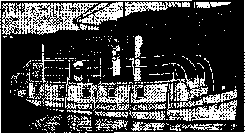
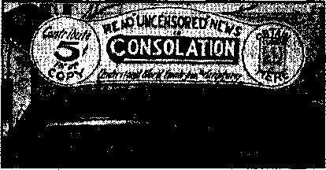
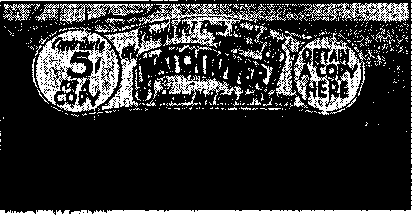
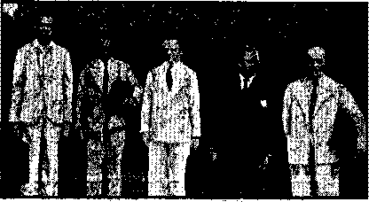
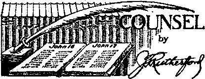

How About Making Everybody Salute?
American Civil Lib^jties Union
The New Government
Jehovah’s witnesses in England
Counsel by J. F. Rutherford
The Hierarchy’s Fifth Column (Part 2)
Fifth Column in the United States
The Supreme Court Sees the Danger
Under the Totalitarian Flag
Seourgings in Southern Rhodesia
British Comment
Published every other Wednesday by WATCHTOWER BIBLE AND TRACT SOCIETY, INC. 117 Adams St., Brooklyn, N. T., U. S. A.
Editor Clayton J. Woodworth
Businas* Manager Nathan H. Knorr
Five Cents a Copy |1 a year in the United States 11.25 to Canada and all other countries
NOTICE TO SUBSCRIBERS
Remlttsneesr For your own safety, remit by postal or express money order. When coin dr currency Is lost in the ordinary malls, there le no redress. Remittances from oountries other than those named below may be made to the Brooklyn office, but only by International postal money order.
Receipt of a new or renewal subscription win be acknowledged only when requested. Notice of Expiration Is sent with the journal one month before subscription expires. Please renew promptly to avoid loss of copies. Send change of address direct to us rather than to the post office. Your request should reach us at least two week* before the date of issue with which it is to take effect. Send your old as well as the new address. Copies Will not be forwarded by the post office to your new address unless extra postage is provided by you.
Published also In Afrikaans, Bohemian, Danish, Dutch, Finnish, French, German, Greek, Hungarian, Japanese, Norwegian, Polish, Portuguese, Bnanish, Swedish, Ukrainian; also special Australian edition in English.
OFFICES FOR OTHER COUNTRIES
England 34 Craven Terrace, London, W. I!
Canada 40 Irwin Avenue, Toronto 5, Ontario
Australia 7 Beresford Road, Strath.field, N.8.W. South Africa 623 Boston House, Cape Town
Entered as second-class matter at Brooklyn, N, under the Act of March 3, 13TS.
Service
At two o’clock in the morning a lady telephoned the president of a large department store. After much ringing, the mogul answered with a sleepy and gruff “Hello!”
“This is Mrs. Soandso,” said the lady in a sirup y voice; “I just couldn’t help calling you personally to tell you that the hat I bought at your -atote last week is simply stunning.”
“That’s Hill very nice,” yawned the president, “but Would you mind telling me, madam, why you call me at this hour of the night about a hat you bought last week ?”
“Because,” she replied politely, “your truck just delivered it.”—The American Flint.
Juit a Dream
The patient had just come out of a long delirium.
“Where am I?” he asked feebly, as he felt loving hands making him comfortable. “Am I in heaven ?”
“No,” cooed his wife, “I’m still with you, dear.”—Labor.
Her First Chicken
They were just married and she had cooked her first chicken. When he was about to carve, he said,
."What did you stuff it with, dear ?”
“It didn’t need stuffing, darling; it wasn't hollow,” she replied.—Australian Consolation.
New Name for a Corporal
Proud Clydach mother, to woman next door: “I am delighted to tell you that triy son has been promoted.”
“Indeed ‘I ’What is he now, a Captain, major or what?”
“No, he has been made a cockerel.”
Ambiguous
From a church notice-board:
Evening Subject: "What Is Hell Like?”
Come and Hear Our Organist.
Seventeen Demon*
The village paper said Mrs. J. Z. Brown delivered an address on “Personal Devils” and seventeen were present.
“And in His name shall the nations hope.”—Matthew 12:21, A.R.V,
Volume XXI Brooklyn, N. Y., Wednesday, July 24, 1940 Number 544
IT IS more than 83 years since Dred Scott, the one-time slave, gained liberty for himself and his family. The question of his emancipation had much to do with bringing on the Civil War. It was a Missouri lawyer who pressed the issue upon public attention. The Supreme Court would have acted more wisely to have faced the issue than to have evaded it. Evasion never settled anything.
More than fourscore years passed from the time Montgomery Blair, brother of the famous Missouri counselor, Francis P. Blair, Jr., appeared in a time of great stress and public excitement in behalf of this poor slave, pleading for his physical liberty, when another famous counselor, Judge Joseph F. Rutherford, also from Missouri, appeared before the same tribunal, pleading, this time, on behalf of the free meh and women of the future, the boys and girls, children of Jehovah’s witnesses, who today are beaten as Dred Scott was beaten, choked as perhaps he was choked, kicked as perhaps he was kicked, threatened as perhaps he was threatened, and ostracized as he was certainly ostracized, and all because they can ndt and will not worship any creature or thing in violation of the express command of the Creator himself, set down in Exodus 20; 3-5.
Thou shalt not make unto thee any graven image, or any likeness of any thing that ia in heaven above, or that is in the earth beneath, or that is in the water under the earth: thou shalt not bow down thyself to them, nor serve them.
The demand of any person or persons that any other person must worship (salute—bow to) any flag, no matter how good the government it represents, is a demand that can not and will not be complied- with? It is an illegal demand, and a plain violation of every principle for which the United States flag stands. It is leading the United States into Armageddon as surely as it entered the Civil War. When the Civil War was over there were no slaves, but multitudes had perished. When Armageddon is ended there will be no little folks kicked, choked and beaten because they love and worship God, but all their enemies will have gone for ever.
The Dred Scott Case
Dred, born in Missouri about 1810, was a slave of Dr, Emerson, an army surgeon, who took him in 1834 to Kock Island, Ill., and May 1838 to Fort Snelling, Wisconsin Territory (now Minnesota) where he married Harriet, a slave of his master, and had two children. Slavery was illegal in both places: in Illinois by its constitution, in - Wisconsin (upper Louisiana Purchase) by the Missouri Compromise. In IC 38 he was taken back to Missouri—Saint Louis.
Here in 1848 was living the eminent free-soil lawyer, Francis P. Blair, Jr. He learnejI of Dred’s migrations, and wishing to test the right of slavery to reclaim persons onee free, induced Dred on being whipped by his master to sue for assault and battery in the State Circuit Court of Saint Louis Cotmty. Blair and his free-soil friends furnished funds and legal assistance. The suit was sustainable only if Dred was a free citizen charging vio-. lence from another citizen; and the court held that his residence' on free soil had made him free, and there was no legal power to re-enslave him. Appeal was taken to the supreme court of Missouri, which reversed the decision; the two associate justices against the chief justice decided that Emerson had only made a temporary change of domicile in obedience to government orders, that his property was held according to the laws of his permanent domicile, and that Scott’s servile character was merely in abeyance and fully resumed on return to Missouri.
[The ease at length got to the United States Supreme Court.]
It was argued at the December terms of 1855 and 1856. Montgomery Blair (brother of Francis P.) and George Ticknor Curtis (brother of Judge Curtis) were counsel for Scott . . . Justice Nelson prepared a brief abstract of the decision; but the public excitement over the slavery question was so intense and menacing to the UAon (just after the
Buchanan-Fremont election), that it was decided to have Chief Justice Taney write a full and careful review of the whole law on the subject of slavery, in hope of making the members of the free-soil party accept it contentedly and cease their agitation. Taney and six assistant judges concurred against Scott; Curtis and McLean dissented.
The written decisions were withheld from the public till 6 March 1857, two days after the inauguration, to avoid embroiling Pierce’s last months. The decision proper was essentially the same as that of the Supreme Court of Missouri; that Dred Scott as a negro was not a. citizen of the United States within the intent of the constitution, and therefore the Circuit Court had no jurisdiction and the suit should be dismissed. . . .
. [The decision ‘‘inflamed the public wrath immeasurably”. ]
The dissenting judges pressed the notorious distinction between citizenship and suffrage; called attention to the Constitution’s repeated mention of the negroes as “persons,” and to the fact that free negroes were actually voters in five of the states in 1787, and were so even yet save where the States had changed their Constitutions to disfranchise them; and held that the civil rights of free negroes were the same at least as those of women and minors. . . . The whole question was soon decided by the war.—The Encyclopedia Americana.
Points of Comparison
Dred Scott and his family were born slaves, and for a time the laws and courts stood between them and liberty. The human family were born slaves of that “prince of this world”, or “god of this world”, who invited Jesus up into a mountain and showed Him all the governments of the world, present and future, and promised Him that He might have them all if He would fall down and worship him.. In effect this wras an effort to get Him to ‘salute the flag’.
It cannot be denied that ‘the whole world lieth in the wicked one, and they are taken captive by him at his will’, nor can it be denied that the Creator has promised that His Son Christ Jesus shall have ‘the uttermost parts of the earth for His possession; He shall break them with a rod of iron; He shall dash them in pieces like a potter’s vessel’. (Psalm 2:8, 9) “And in the days of these kings shall the God of heaven set up a kingdom, which shall never be destroyed ; and the kingdom shall not be left to other people, but it shall break in pieces and consume all these kingdoms, and it shall stand for ever.”—Daniel 2:44. .
Jehovah’s witnesses have come to the clear 4 knowledge that Jehovah’s Kingdom is now functioning in the earth and every other government will be dissolved in Armageddon, when the Theocracy for which Jesus taught His followers to pray shall be ruling in all its power, and the time shall have come when “the saints of the Most High shall take the kingdom, and possess the kingdom for ever, even for ever and ever”.—Daniel 7:18.
Dred Scott lived at the time when slavery was about to perish in the Civil War. Jehovah’s witnesses and their children live at the time when slavery to the Devil has already perished as far as they are concerned and slavery is to perish utterly at Armageddon. Meantime it is their privilege to “appeal to Caesar” (that is, appeal to the courts), as did Paul, the apostle. And in the ease of Jehovah’s witnesses there is the further reason, that the United States government has officially decided that it is a Christian government.
The Majority Opinion
The majority opinion of the Supreme Court delivered June 3, 1940, was not in accord with the argument so ably presented by Judge Rutherford at 2:30 p.m. April 25, and recorded on pages 19 to 24 of Consolation No. 540. [See also the editorial entitled “The Supreme Court on Trial”, which constitutes the leading article in No. 541.] The majority opinion, an eight-to-one decision, is summarized by The United States Law Week as follows:
Requirement of the board of education of a Pennsylvania school district that pupils salute the national flag in a daily school exercise as a condition of attendance at such public schools, enforced against the religious objection of members of a sect known as “Jehovah’s witnesses,” does not infringe the liberty guaranteed by the Four-, teenth Amendment to the Federal Constitution.
It is well established that religious freedom does not operate to relieve the individual from obedience to general laws not aimed at the promotion or restriction of religious beliefs. Although past cases have involved exertion of legislative power to promote some specific interest of secular society, such as protection of the family, promotion of health or the common defense, these are specific activities of government all of which presuppose the existence of an organized political society. The flag is the symbol of our national unity and as such' fosters the “cohesive sentiment” which is the foundation of that organized society.
State legislatures and school authorities are not “barred from determining the appropriateness of consolation various means to evoke that unifying sentiment without which there can ultimately be no liberties, civil or religious”. That end is legitimate. “The effective means for its attainment are still so uncertain and so unauthenticated by science as to preclude us from putting the widely prevalent belief in flag-saluting beyond the pale of legislative power. It mocks reason and denies our whole history to find in the allowance of a requirement to salute our flag on fitting occasions the seeds of sanction for obeisance to a leader.”
American Bar Association Opinion
The Committee on the Bill of Rights, of the American Bar Association, consisting of Grenville Clark, chairman (of the New York Bar), Douglas Arant (of the Alabama Bar), Zechariah Cliaf'ee, Jr. (of the Rhode Island Bar), Osmer C. Bitts (of the Vermont Bar), Lloyd K. Garrison (of the Wisconsin Bar), George I. Haight (of the Illinois Bar), Monte M. Lemann (of the Louisiana Bar), Ross L. Malone, Jr. (of the New Mexico Bar), Burton W. Musser (of the Utah Bar), Joseph A. Padway (of the Wisconsin Bar), and Charles P. Taft (of the Ohio Bar), presented a brief to the United States Supreme Court on the same day that Judge Rutherford addressed the Court on this subject.
In that brief these able men expressed the opinion that, as far as Jehovah’s witnesses are concerned, the flag salute must be regarded as a religious ritual; that there is no public need for a compulsory flag salute overriding such scruples; that legislation is new in America which would compel a particular form of expression, such as the flag salute; that a compulsory flag salute is a very different thing from a voluntary flag salute; that compulsory salute legislation is void because it unjustifiably infringes upon the liberty of an individual, and that the compulsory flag salute cannot be sustained on the ground that public school education is granted as a matter of grace so that the requirement, even though arbitrary and capricious, can be enforced by expulsion from the public school.
A few paragraphs taken from the Bar Association Brief will be read with interest bv all: ■
First: Neither the legislative branch nor the courts have any power to declare that a given practice does not and cannot carry a religious significance, in the face of an individual’s sincere and honest determination that for him a religious significance exists. Consequently the finding of fact that the respondent children sincerely regarded the
’ JULY 24, 1MO salute as a reflgious ritual forbidden by the Second Commandment is a conclusive answer to the contention that the salute must be considered merely a patriotic ceremony which cannot have any religious significance. To hold otherwise and thus to deny the right of private judgment a.s to what carries a religious meaning would, we shall submit, strike at the heart of religious freedom.
Second: Granting that the State, under some circumstances, can constitutionally override religious scruples, such action cannot constitutionally , be taken unless there is a clear showing that the overriding of the individual’s religious belief is essential in the public interest. No such showing, we shall submit, has been made here; and consequently the school regulation cannot be upheld as a reasonable measure in the public interest.
In our view, the two points just stated should, for clarity, be carefully separated and dealt with as distinct issues. The former involves the question whether the right of private judgment as to the religions content of a particular practice shall be held inviolate. The second point relates to a wholly different matter, vis.: Assuming the existence of the religious scruple, under what circumstances may the State constitutionally override -itV The second question is of a character that the courts have been accustomed to deal with in a variety of situations. But the first issue, as to whether it is within the power of legislature or court to pass upon the fact of the existence of a particular religious scruple or its validity, involves the question whether our courts are to enter upon an unfamiliar type of determination in theological matters.
Third: We shall submit that even if no question of religions liberty is deemed to he here involved, there is another and broader ground upon which legislation of this character should b» held void, viz., that to compel the salute over objection is an im-eonstitutioHal infringement upon individual liberty, even though the refusal to comply is not deemed to involve a religious question. The state courts have said several times, in broad terms, that the legislature may properly enact lawsTo promote loyalty and morale and that the compulsory salute may be justified as an exercise of legislative discretion as to the means to be employed to that end. The breadth of the language used in expressing this thought gives one pause and raises questions of .a serious character. ’
When it is said that the legislature has a broad discretion to proscribe ceremonies in order to promote loyalty, it is fair to ask how far this doctrine extends. For instance,suppose that under such a doctrine a law were enacted requiring all adult persons to salute the flag at fixed intervals. Would such law be constitutional linger our system of government even in the absence of an assertion of religious scruples as the ground of opposition? We shall submit that it would not be constitutional; and if this position be sound, the question arises whether there is a constitutional difference between
5
the imposition of the compulsory flag salute upon children and the imposition of a like requirement upon adults.
We respectfully suggest that this Court should consider the implications which are inherent in the broad language used by some of the state courts as to the extent of legislative discretion to require ceremonies of this sort. And we shall submit that this Court should hold, if necessary, that the compulsory flag salute is unconstitutional even if the refusal to conform thereto is not treated as involving an issue of religions liberty.
Fourth: Apart from the main issues above mentioned, there is also a subsidiary question of a more technical nature, as to whether the right to attend state supported schools is a mere privilege the enjoyment of which ean be conditioned in any way that the State sees fit. Under a fourth heading, we shall submit that any such contention as a ground for the dismissal of this suit for reinstatement is without basis.
Further Excerpts from the Brief
The record of history shows that the existence and seriousness of religious beliefs are not to be measured by the current opinion of the time. History shows that the existence of religious scruples lies in truth and fact within the breast of the individual and nowhere else; and no current opinion or flats of legislatures or courts have ever been able to establish that a particular act or ceremony has no religious significance when the individual himself asserts the contrary.
The truth is that the attempt to adjudge whether or not a particular ceremony can have or does in fact have a religious significance is something beyond the competence of legislatures and courts. This is so for the simple reason that whether or not such religious significance exists lies inherently within the mind and heart of the individual man or woman.
The Committee respectfully suggests that this Court should definitely repudiate the idea that a governmental agency can predicate any' official action whatsoever upon the notion that it, rather than the individual, can determine whether or not a particular ceremony carries a religious significance. When the legislature, the executive, or the courts enter this sphere, they are doing no more or less than attempting to tell the individual what is or is not displeasing to God. . . .
It follows that a recognition of this new ground —the presumed promotion of loyalty and morale— as a basis for the overruling of religious scruples would be a new extension of legislative power. The present dominance of totalitarian ideas in other parts of the world suggests that an extension of legislative power in this direction should be viewed with suspicion and, in the absence of a showing of clear necessity, should be condemned as a deprivation of individual liberty without due process of law. ...
Never having encountered a compulsory salute in their own school experience, many persons may tend to regard the ceremony as a normal gesture of respect to a national symbol. They may thus fail to appreciate the distinction in practical effect between a voluntary and compelled ceremony. The difference is, however, fundamental. Persons who willingly give a voluntary salute find that it increases their own loyalty. Then they may assufte that, aS a matter of course, the compulsory salute will increase the loyalty of others. But it by no means follows that the same effect of increased loyalty will be caused by a salute given only under compulsion and in violation of one’s deepest convictions, The willing saluter easily assumes that failure to salute even under compulsion shows a lack of loyalty. Because the willing act of saluting is associated with loyalty in his own mind, he may assume that the failure of others to salute under compulsion is associated with disloyalty. But plainly this is not the fact. A concrete proof to the contrary is that the lower courts have expressly found, as indeed it has been proved or assumed in every litigated flag salute case, that the children are loyal American citizens and have not intended to show any disrespect for the Government, , . .
How About Making Everybody Salute?
It may be said that a portrait of a man differs from the flag in that the flag is merely an abstract symbol. Whether such a distinction is valid may be tested by inquiring whether it would he constitutional for the legislature to require all persons, young and old (except young infants, the infirm and the sick), to salute the flag at stated intervals. The statute of Pennsylvania in the case at bar permits the school authorities to require the salute from children; and statutes of other states directly require the ceremony and frequently prescribe its frequency, such as once a week and even daily. The requirement of the salute from the whole population would therefore be merely a matter of extending these very statutes to a different age group.
Specifically, let us suppose that a statute of Pennsylvania or New York should require the whole adult population to give this particular form of salute once a week at a time to he fixed by the Governor or other executive agency. T^et us suppose that many citizens refused to comply, but none on religious grounds. Some would presumably refuse on grounds of mere inconvenience; others might object to the particular form of the salute as too much resembling the Nazi and Fascist salutes. Still others would doubtless invoke their “liberty” as American citizens without further specifying what they had in mind. Let us suppose that these objectors were arrested and put on trial as to whether they should suffer penalties for their non-compliance and that they were to plead the unconstitutionality of the legislation as depriving them of their “liberty” under the Fourteenth Amendment. Would this plea be good?
> We submit that the plea would be good and that such legislation would be unconstitutional. The requirement of such a ritual is clearly alien to our institutions. It would be an intolerable invasion of individual liberties. Because it is inherent in the Very nature of Americans to resent unnecessary assertions of authority, such a measure would not further the end of promoting loyalty and strengthening morale, but would have precisely the opposite effect. It would be unconstitutional because there would be no “appropriate relation” between the legislative command and the prescribed punishment, on the one hand, and the avowed objective on the other.
As already pointed out, it was not until the first of these flag salute statutes was enacted that any American Government had attempted to force its citizens (not in military service) to go through any form of ceremony similar to this. We suggest that the supposed legislation would be held void for the broad reason that such an encroachment on the liberty of the citizen would be unnecessary and unreasonable and wholly inconsistent with the spirit qf our institutions.
If the above conclusion be sound in respect of legislation seeking to compel a salute from the whole population, does precisely similar legislation become valid merely because it is restricted .to children of school age? We suggest that this difference is not sufficient to sustain the legislation. . ..
The philosophy of free institutions is now being subjected to the most severe test it has ever undergone. Advocates of totalitarian government point to the speed and efficiency' with which such systems are administered, and assert that democracy can offer nothing to outweigh these advantages. The answer is to be found in the value of certain basic individual rights and the assurance, afforded by free institutions that these shall not be required to yield to majority pressure no matter how overwhelming.
American Civil Liberties Union
The American Civil Liberties Union presented a brief on the flag issue at the same time that Judge Rutherford addressed the Supreme Court of the United States on that subject. From that brief are now quoted a few of the many interesting paragraphs which it contains.
None of the signers of this brief are members of Jehovah’s witnesses, nor do they share the religious conviction that saluting the flag violates the law of God. Rut they grid the Union consider that the issues raised by the record in this case, and the still graver issues which lie just beyond it, are of vital importance not only to the religious freedom of individual American citizens, but to the sources of that deep affection and confidence from which alone can spring an abiding popular loyalty to the American system of government and the American flag. ...
The respondents believe that God has commanded them to withhold the salute from any flag whatsoever,—and of their obligations to their Citator they must, of necessity, be the final judges on this earth. That the Board of Education of Minersville has deprived them of the liberty of school attendance,—and threatened to deprive them of other liberties,—in consequence of their loyalty to their religion, seems to us perfectly clear. Was it within the Board of Education’s authority, as the body charged with the secular education of the children of Minersville, to do what it has done? Was it within the police power of the State acting through its agency, the School Board? We know of no direct precedent for the solution of such a problem under the Constitution of the United States, . . .
It was never more important to reaffirm and give meaning to the principle of religious liberty than today. The principle that matters of religion are to be decided by the individual and not by Government, be it Court, Legislature or Executive, should be unmistakably reaffirmed by this Court in this case. The principle that religious belief and practice arc within the guarantees of the First and Fourteenth Amendments, protected from State interference, should be firmly established. And it should be made clear that the only purposes for which a State may exercise its police powers are in the domain of action, and not the heart. ,
In this ease, no practical consideration justifies soiling our national emblem “with the tears of a little child” who, in the view of most of us, may he misguided or even mis instructed, but whose religious convictions, in the absence of overwhelming public necessity, must be respected and not penalized. ■
The Newspapers and the Flag
Among the newspapers of the United States that have published editorials differing from the majority opinion of- the United States Supreme Court in the flag ease are the following:
Asbury Park (N.J.) Press; Altoona (Pa.) Mirror; Arvin (Calif.) Tiller; Ann Arbor (Mieh.) News; Arlington (Kans.) Enterprise; Auburn (N.Y.) Citizen-Advertiser ; Akron (Ohio) Beacon Journal; The American Freeman, Girard, Kansas; The American Guardian, Oklahoma City, Okla.; The American Protestant, Washington, D.C.; Bridgeport (Conn.) Post; Boston (Mass.) Post; Boston (Mass.) Herald; Birmingham (Ala.) Age-Herald and News; Baltimore (Md.) Sun; Boston (Mass.) Transcript; Bayonne (N.J.) Times; Brockton (Mass.) Enterprise; Butte Montana Standard; Buffalo (N. Y.) Times; Bismarck (N. Dak.) Tribune; Benton Harbor (Mieh.) News-Palladium; Sonora (Calif.) Banner and News; Buffalo (N.Y.) Courier-Express; Chicago (III.) Tribune; Chicago (Ill.) News; Christian Century, Chicago, Ill.; Chicago (Ill.) Times; The Covenant Weekly, Chicago, 111.; Cincinnati (Ohio) Enquirer; Cincinnati (Ohio) Post; Columbus (Ohio) Citizen; Columbus (Ohio) State Journal; Camden (N.J.) Courier-Post; Cleveland (Ohio) News; Cleveland (Ohio) Plain Dealer; Cleveland (Ohio) Press; Svens-ka Amerikanaren Tribunen, Chicago, Ill.
Dallas (Texas) News; Dallas (Texas) Di.s-pat ch-Journal; Daily News, Wellington, Kans.; Denver (Colo.) Post; Decatur (Bl.) Herald; Detroit (Mich.) Times; Duluth (Minn.) Herald; Des Moines (Iowa) Register; Day ton (Ohio) News; Detroit (Mich.) Free Press; The Daily Republic, Mitchell, S. Dak.; Easton (Pa.) Herald; Port Myers (Fla.) News-Press; Fergus Falls (Minn.) Journal; Frederick (Okla.) Press; Fort Worth (Texas) Star-Telegram; Greenfield (Mass.) Recorder-Gazette; Greenfield (Mass.) Shopping News; Glens Falls (N. Y.) Times; Glenwood (Minn.) Herald; Great Falls (Mont.) Tribune; Hemet (Calif.) News; Hollywood (Calif.) Citizen-News; Hartford (Conn.) Courant; Johnstown (Pa.) Democrat; Johnstown( Pa.) Daily Tribune; Jacksonville (Fla.) Journal; Key West (Fla.) Citizen; Kansas City (Mo.) Journal; Simpson’s Leader-Times, Kittanning, Pa.; Louisville (Ky.) Times; Louisville (Ky.) CourierJournal; Los Angeles (Calif.) Examiner; Lbs Angeles (Calif.) News; Press-Telegram, Long Beach, Calif.
Miami (Fla.) Herald; Miami (Fla.) News; Milwaukee (Wis.) Sentinel; Minneapolis (Minn.) Tribune; Massillon (Ohio) Independent; The Monitor, Aurora, Mo.; Mobile (Ala.) Press; Memphis (Tenn.) Press-Scimitar; Bartlesville (Okla.) Morning-Examiner; News Bulletin, National Education Association; Washington, D.C.; New York Times; New York Herald Tribune; New York Daily News; New York Post; New York Sunday Mirror; New York World-Telegram; The Nation, New York city; Newark (N.J.) News; Newark (N.J.) Ledger; North Adams (Mass.) Transcript; New Britain (Conn.) Herald; Nashville Tennesseean; Oakland (Calif.) Tribune; Oroville (Calif.) Mercury-Register; Orlando (Fla.) Sentinel; Omaha (Nebr.) World-Herald; Plainfield (N.J.) Courier-News; Passaic (N.J,) Herald-News; Portland Oregonian; Portland (Oreg.) Journal; Pittsburgh (Pa.) Press; Pittsburgh (Pa.) Courier; Philadelphia. (Pa.) Bulletin; Philadelphia (Pa.) Public Ledger; Philadelphia (Pa.) Inquirer; Philadelphia (Pa.) Transcript; Philadelphia (Pa.) Record; Punxsutawney (Pa.) Spirit; Pittsfield (Mass.) Eagle; Pathfinder, Washington, D.C.; Pueblo (Colo.) Chieftain; Portland (Maine) Express; Portland (Maine) Press-Herald; Peru (Ind.) Tribune; Providence (ILL) J our ndl; Quincy (Mass.) Patriot Ledger; Bochcster (N.Y.) Democrat and Chronicle; "Rochester (N.Y.) Times-Union; Rockford (Ill.) Register; Redding (Calif.) Record; Raleigh (N.C.) News and Observer.
San Francisco (Calif.) Chronicle; Sacramento (Calif.) Union; Sacramento (Calif.) Bee; San Diego (Calif.) Union; San Francisco (Calif.) News; San Diego (Calif.) Sun; Santa Rosa (Calif.) Independent; St. Louis (Mo.) Globe-Democrat; St. Louis (Mo.) PostDispatch; St. Louis (Mo.) Star-Times; Seattle (Wash.) Post-Intelligencer; Seattle (Wash.) Star; Sault Ste. Marie (Mich.) Evening News; Newark (N.J.) Call; Springfield (Mass.) Union; Salem (Oreg.) Statesman; Steubenville (Ohio) Herald-Star; Springfield (Ohio) News-Sun; Shreveport (La.) Journal; Wellesley (Mass.) Townsman; Tampa (Fla.) Times; Tallahassee (Fla.) Democrat; Tacoma (Wash.) Labor Advocate; Tacoma (Wash.) Times; Tacoma ("Wash.) News-Tribune; Trenton (N.J.) Stale Gazette; Toledo (Ohio) Blade; Tucson Arizona Star; Topeka (Kans.) Capital; Urbana (Ill.) Courier; Utica (N.Y.) Observer-Dispatch.
Washington (D.C.) Herald-Times; Washington (D.C.) Star; Washington (D.C.) Post; Waterbury (Conn.) Republican; Waterbury (Conn.) American; Washington (Pa.) Observer and Reporter; West Philadelphia (Pa.) Chronicle; Athenaeum, Morgantown, W. Va.; Intelligencer (Wheeling^ W. Va) ; Tribune, Willmar, Minm; Sun, Westerly, R. I.; White Plains (N.Y.) Reporter; Winston-Salem (N.C.) Journal; Youngstown (Ohio) Telegram; Youngstown (Ohio) Vindicator,
The Minority Opinion
The minority opinion, which was delivered by Mr. Justice Stone, is of "special interest to those familiar with the Dred Scott case, to members of the American Bar Association, to the American Civil Liberties Union, to 171 of the leading newspapers of the United States, to the public in general interested in the preservation of civil liberty, and, most of all, to the people of good will toward Jehovah
God, who hope to see the vindication of Jehovah’s name at Armageddon. It may be that because of this dissenting opinion the great and good God may permit Mr. Justice Stone to pass through Armageddon and over into the reign of peace and justice and truth and honesty which is the heart’s desire of every true child of God. His courageous dissenting opinion is printed in full.
I think the judgment below should be affirmed.
Two youths, now fifteen and sixteen years of age, are by the judgment of this Court held liable to expulsion from the public schools and to denial of all piibliely supported educational privileges because of their refusal to yield to the compulsion of a law which commands their participation in a school ceremony contrary to their religious convictions. They and their father are citizens and have not exhibited by any action or statement of opinion, any disloyalty to the Government of the United States. They are ready and willing to obey all its laws which do not conflict with what they sincerely believe to be the higher commandments of God. It is not doubted that these convictions are religious, that they are genuine, or that the refusal to yield to the compulsion of the law is in good faith and with all sincerity. It would be a denial of their faith as well as the teachings of most religions to say that children of their age equid not have religious convictions.
. The law which is thus sustained is unique in the history of Anglo-American legislation. It does more than suppress freedom of speech and more than prohibit the free exercise of religion, which conce dedly are forbidden by the First Amendment and are violations of the liberty guaranteed by the Fourteenth. For by this law the state seeks to coerce these children to express a sentiment which, as they interpret it, they do not entertain, and which violates their deepest religious convictions. It is not denied that such compulsion is a prohibited infringement of personal liberty, freedom of speech and religion, guaranteed by the Bill of Rights, except in so far as it may be justified and supported as a proper exercise of the state’s power over public education. Since the state, in competition with parents, may through teaching yi the public schools indoctrinate the minds of the young, it is said that in aid of its undertaking to inspire loyalty and devotion to constituted authority and the flag which symbolizes it, it may coerce the pupil to make affirmation contrary to his belief and in violation of his religious faith. And, finally, it is said that since the Minersville School Board and others are of the opinion that the country will be better served by conformity than by the observance of religious liberty which the Constitution prescribes, the courts are not free to pass judgment on the Board’s choice.
Concededly the constitutional guaranties of personal liberty are not always absolutes. Government July 24, 1940
has a right to survive and powers conferred upon it are not necessarily set at naught by the express prohibitions of the Bill of Rights. It may make war and raise armies. To that end it may compel citizens to give military service, Selective Draft Law Cases, 245 U. S. 366, and subject them to military training despite their religious objections, Hamilton v. Regents, 293 U. S. 245. It may suppress religious practices dangerous to morals, and presumably those also which are inimical to public safety, health and good order. Davis v. Beason, 133 U. S. 333. But it is a long step, and one which I am unable to take, to the position that government may, as a supposed educational measure and as a means of disciplining the young, compel public affirmations which violate their religious conscience. '
The very fact that we have constitutional guaranties of eivil liberties and the specificity of their command where freedom of speech and of religion are concerned require some accommodation of the powers which government normally exercises, when no question of civil liberty is involved, to the constitutional demand that those liberties be protected against the action of government itself. The state concededly has power to require and control the education of its citizens, but it cannot by a general Jaw competing attendance at public schools preclude attendance at a private school adequate in its instruction, where the parent seeks to secure for the child the benefits of religious instruction not provided by the public school. Pierce v. Society of Sisters, 268 U. S. 510. And only recently we have held that the state’s authority to control its public streets by generally applicable regulations is not an absolute to which free speech must yield, and cannot be made the medium of its suppression. Hague v. Committee of Industrial Organization, 307 U. S. 496, 514, et seg., any more than ean its authority to penalize littering of the streets by a general law be used to suppress the distribution of handbills as a means of communicating ideas to their recipients. Schneider v. State, 30S U. S. 147.
In these cases it was pointed out that where there are competing demands of the interests of government and of liberty under the Constitution, and where the performance of governmental functions is brought into conflict with specific constitutional restrictions, there must, when that is possible, be reasonable accommodation between them so as to preserve the essentials of both and that it is the function of courts to determine whether such accommodation is reasonably possible. In the eases just mentioned the Court was of opinion that there were ways enough to secure the legitimate state end without infringing the asserted immunity, or that the inconvenience caused by the inability to secure that end satisfactorily through other means, did not outweigh freedom of speech or religion. So here, even if we believe that such compulsions will contribute to national unity, there are other ways
to' teach loyalty and patriotism which are the sources of national unity, than by compelling the £upil to affirm that which he does not believe and by commanding a form of affirmance which violates his religious convictions. Without recourse to such compulsion the state is free to compel attendance at school and require teaching by instruction and study of all in our history and in the structure and organization of our government, including the guaranties of civil liberty which tend to inspire patriotism and love of country. I cannot say that government here is deprived of any interest or function which it is entitled to maintain at the expense of the protection of civil liberties by requiring it to resort to the alternatives which do not coerce an affirmation of belief.
The guaranties of civil liberty are but guaranties of freedom of the human mind and spirit^and of reasonable freedom and opportunity to express them. They presuppose the right of the individual to hold such opinions as he will and to give them reasonably free expression, and his freedom, and that of the state as well, to teach and persuade others by the communication of ideas. The very essence of the liberty which they guaranty is the freedom of the individual from compulsion as to what he shall think and what he shall say, at least where the compulsion is to bear false witness to his religion. If these guaranties are to have any meaning they must, I think, be deemed to withhold from the state any authority to compel belief or the expression of it where that expression violates religious convictions, whatever may be the legislative view of the desirability of such compulsion.
History teaches us that there have been but few infringements of personal liberty'by the state which have not been justified, as they are here, in the name of righteousness and the public good, and few which have not been directed, as they are now, at politically helpless minorities. The framers were hot unaware that under the svstem which they created most governmental curtailments of personal liberty would have the support of a legislative judgment that the public interest would be better served by its curtailment than by its constitutional protection. I cannot conceive that in prescribing, as limitations upon the powers of government, the freedom of the mind and spirit secured by the explicit guaranties of freedom of speech and religion, they intended or rightly could have left any latitude for a legislative judgment that the compulsory expression of belief which violates religious convictions would better serve the public interest than their protection. The Constitution may well elicit expressions of loyalty to it and to the government which it created, but it does not command such expressions or otherwise give any indication that compulsory expressions of loyalty play any such part in our scheme of government as to override the constitutional protection of freedom of speech and religion. And while such expressions of loyalty, when voluntarily given, may promote national-unity, it is quite another matter to say that their compulsory expression by children in violation of their own and their parents’ religious convictions can be regarded as playing so important a part in our national unity as to leave school boards free to exact it despite the constitutional guarantee of freedom of religion. The very terms of the Bill of Rights preclude, it seems to me, any reconciliation of such compulsions with the constitutional guaranties by a legislative declaration that they are more important to the public welfare than the Bill of Rights.
But even if this view be rejected and it is, considered that there is some scope for the determination by legislatures whether the citizen shall be * compelled to give public expression of such sentiments contrary to his religion, I am not persuaded that we should refrain from passing upon the legislative judgment “as long as the remedial channels of the democratic process remain open and unobstructed,” This seems to me no more than the surrender of the constitutional protection of the liberty of small minorities to the popular will. We have previously pointed to the importance of a searching judicial inquiry into the legislative judgment in situations 'where prejudice against discrete and insular minorities may tend to curtail the operation of those political processes ordinarily to be relied on to protect minorities, See United States v. Carotene Products Co., 304 U, S. 144, 152, note 4. And until now we have not hesitated similarly to scrutinize legislation restricting the civil liberty of racial and religious minorities although no political process was affected. Meyer v. Nebraska, 262 U. S. 390; Pierce v. Society of Sisters, supra; Farrington v. Tofc«-siiige, 273 U. 8. 284. Here we have such a small minority entertaining in good faith a religious belief, which is such a departure from the usual course of human conduct, that most persons are disposed to regard it with little toleration or concern. In such circumstances careful scrutiny of legislative efforts to secure conformity of belief and opinion by a compulsory affirmation of the desired belief, is especially needful if civil rights are to receive any protection. Tested by this standard I am not prepared to say that the right of this small and helpless minority, including children having a strong religious conviction, whether they understand its nature or not, to refrain from an expression obnoxious to their religion, is to be over-bome by the interest of the state in maintaining discipline in the schools.
The Constitution expresses more than the conviction of the people that democratic processes must be preserved at all costs. It is also an expression of faith and a command that freedom of mind and spirit must be preserved, which government must obey, if it is to adhere to that justice
and moderation without which no free government can exist. For this reason it would seem that legislation which operates to repress the religious freedom of small minorities, which is admittedly within the scope of the protection of the Bill of Rights, must at least be subject to the same judicial scrutiny as legislation which we have recently held to infringe the constitutional liberty of religious and racial minorities.
With such scrutiny I cannot say that the inconveniences which may attend some sensible adjustment of school discipline in order that the religious convictions of these children may be spared, presents a problem so momentous or pressing as to outweigh the freedom from compulsory violation of religious faith which has been thought worthy of constitutional protection.
THERE is a tiny religious sect in the United States known as Jehovah’s witnesses— a few in Massachusetts, a few in Texas, a few in Pennsylvania, a few elsewhere, perhaps 20,000 in a country of 130,000,000.
Small religious sects often have ideas regarded by most of us as peculiar. There is a sect in Ohio, for example, which bars the use of buttons on clothing as being too worldly, so the brothers and sisters use hooks and eyes. The small sect known as Shakers believes the sexes should live separately. The Holy Rollers are so called because, in emotional religious ecstasy, they roll on the floor.
The peculiar thing about Jehovah’s witnesses is that they are forbidden by their religion to salute the flag. This does not mean that they are unpatriotic, that they do not love their country. It simply means that, as they read the Scriptures, to salute the flag is to violate the divine commandment stated in verses 3, 4 and 5 of the Book of Exodus, [chapter 20] forbidding tile bowing down to a graven image.
This, as we say, is very, very peculiar, but the members of Jehovah’s witnesses do not think so; they are very sincere about this part of their belief, so much so that they are willing to go to jail rather than salute the American flag or any other flag; they are willing further to risk the anger of mobs-—-which is a lot more than many professional flag-wavers are willing to do. Last Saturday, 40 Jehovah’s witnesses were rescued from such a mob in Odessa, Tex., and placed in jail for their belief.
Yesterday the Supreme Court of the United States, by the incredible vote of 8 to 1, held constitutional a regulation requiring school children to salute the flag, and, just as incredibly, the celebrated liberal Felix Frankfurter delivered the majority opinion. ,
JULY 24, 1940
The case involved two small children, Lillian and William Gobitis, 12 and 10 years old, members of Jehovah’s witnesses, who refused to salute the American flag as a part of the daily exercises in a public school in Minersville, Pa. The children were expelled from school and the ease eventually found its way to the highest court in the land.
In fighting their case, Jehovah’s witnesses acquired an unexpected ally: the Committee on the Bill of Rights of the American Bar Association, headed by the famous lawyer, Grenville Clark, of the New York law firm formerly headed by Elihu Root.
A powerful argument was made by Mr. Clark’s committee. It is contained in a 45-page written brief signed by, among others, Charles P. Taft, Lloyd K. Garrison, Monte. W. Le-mann and Zechariah Chafee, Jr. The brief in learned and eloquent language upheld the right of Jehovah’s witnesses to worship God in their own way—a right guaranteed by the first amendment to the Constitution of the United States.
We wish we could quote at length from the American Bar Association’s brief, but perhaps this one passage will be enough;
The philosophy of free institutions is now being subjected to the most severe test it has ever undergone, Advocates of totalitarian government point to the speed and efficiency with which such systems are administered, and assert that democracy can offer nothing to outweigh these advantages. The answer is to be found in the value of certain basic individual rights and the assurance afforded by free institutions that these shall not be required to yield to majority pressure, no matter how overwhelming.
The worth of our system must ultimately be judged in terms of the importance of those valuea and the care with which they are safeguarded. We consider them immeasurably important. We believe that the letter and spirit of our Constitution de
ll
Biand vindication of the individual liberties which are abridged by the challenged regulation.
But this argument was east aside by the Supreme Court, and now by judicial fiat Lillian and William Gobitis will be compelled to perform an action whieh, in their creed, is a sin against God.
We think this decision of the United States Supreme Court is dead wrong. We think its decision is a violation of American principle. We. th ink it is a surrender to popular hysteria. If patriotism depends on such things as this —on violation of the fundamental right of religious freedom, then it becomes not a noble emotion of love for country, but something to be rammed down our throats by the law.
We honor Justice Stone, who refused to lend himself to it.—St. Louis Post-Dispatch.
♦ The company at Dublin is now getting well into its stride. Meetings are held regularly each Sunday in a smart room over the Broadway Cafe, O’Connell Street—this is the main street of Dublin and is one of the finest streets in the whole of the British Isles. An attendance of between 15 and 20. is recorded eaeh Sunday. The first meeting is divided up into half an hour Salvation study and half an hour Service meeting. Then an hour later The Watchtower is studied. The work in Dublin has to be done chiefly amongst the Protestants,—if it is to be done at all. However, many Roman Catholics are hearing of the truth for the first time, through their Protestant friends, as shown by the following experiences:
One publisher reports: “A person of good will possessing a radio-gram received a set of records on loan. When I called back to collect them I was told that 14 people who had come to a party gathering had heard the lecture through. Seven of the party were Roman Catholics, and it was they who asked to have the lecture run over again as they had never heard anything like it before in their lives.”
Another person who owned a radio-gram was loaned a set and reported with enthusiasm that 16 friends and relatives had heard it at one sitting. Still another person reported 22 listeners in one week.
Many people of good will who have radiograms are pleased to know that they can have the recordings on loan, and we try’ to accommodate as many as possible by making a round and exchanging them weekly.
Another publisher reports: “I contacted a member of the Communist party here in Dublin, and in the course of conversation I informed him that the Roman Catholic Hierarchy was at the hack of Communism. To my surprise he .said, T did not know that, but it doesn’t matter so long as they uphold our cause’; proving that all the ’isms do not mind what rotten racket is back of them so long as their cause is upheld. This particular man was arrested last week for taking part in demonstrations. I wonder if he realizes that it is the same racket that is at the back of his being arrested.”
A Roman Catholic person in Dublin is showing good interest in the truth since a pioneer —who is lodging with her—has brought the message to her attention. This particular person tells of an experience she had recently" when attending “mass”. She usually went into the church at a certain door where the members paid 2d on entering. This particular morning she went to a different door, but was stopped by the priest, who demanded 6d before letting her in. She indignantly refused, and said she was not going to pay 6d just to enter the house of God by a different door, and she walked inside in spite of the priest. This opened her eyes further to the hypocrisy of religion, and when the priest, later called at her home he got more than he bargained for. She demanded to know where the Scriptures mentioned “Purgatory”, etc. The priest was beaten hands down, and was told that this person was now finished with their racket. She now attends the meetings of Jehovah’s witnesses.—Robert Anderson, Zone servant.
♦ Two elderly publishers had completed witnessing a dead-end Catholic street and were commencing to walk towards the remaining open end, when they' heard a number of loud and harsh voices just round the corner.
“Where are they ?” shouted someone. “Round the corner,” shrieked some women. “How many are there?” demanded another. “Two,” again responded the shrill voices of women.
ThkochaCY magazine distributors, Enfield, London, April, 1.940
“Watch them coming into sight,” “Get them, whatever you do,” etc,, etc. ■
At hearing this the eyebrows of the two friends lowered as never before. What could they do? go back? No, that was impossible; there wras no means of escape; it was a dead end.
Mustering all available courage they decided to “grin and (tear it” and go forward.
“What cruel men there are on the earth 1 But what can we expect ? the Devil is in control; ‘in the midst of life we are in death/” they muttered, resigned for the worst.
They were getting round the corner when the threatening ci;owd came into sight. There they stood, armed with upraised long slaves.
The two friends shuddered; their end had come-—when all at onee two rats burst out from under the floor of an old wooden, shed.
No sooner had the rats come into sight than the staves crashed down upon them; they moved no more.
Immediately it dawned upon the minds of our heroes that the unfortunate creatures were the real objects of the wrath of the crowd. Soon their eyebrows commenced to resume their former position, and their hearts resumed normal heartbeat.
JULY 24, 1940
Not a Sheep Will Be Missed
♦ Proof that the King provides for those who first seek His kingdom is found in the ease of the Beit I er family. As Russian citizens of German descent, they were exiled to Siberia during the World War while others like them but (please note) of Catholic faith were not so exileci. Upon return to their old home after the war they found it. impossible there to serve their God as they felt they should; so, like another of great faith, they got themselves and three children out of their country and from their father’s house to another land where the Lord led them, finally landing here in America, near Pontiac*, on a. small farm. Ere long a witness for Jehovah found them. The Kingdom message fell on hungry ears and today mother and father and four children are all happy in active service under the great Theocrat, For many years they sought the Kingdom, and the Lord led them to that haven of refuge. It is a pleasure to know them. In spite of hardships ivhieh only stout hearts and sturdy characters could withstand, their faces are shining with the everlasting joy their hearts longed for and which they have found. The Lord sometimes gathers His sheep from a long way off,—Wm. P. Strong.
13
♦ I send a small photograph of the boat thgt my husband, Carl Gustav Olsson, and I are using in the work, visiting the isles and parts of the coast of Sweden. Two years ago we worked in the East Sea and visited between 200 and 300 isles in a few months. The last two years we have been working at the west' coast of Sweden, some places very priest-ridden. But even here some come out and hail the King of kings. Everything seems so uncertain now, because of the war, but if it be possible we hope to go to the East Sea again before the close of 1940,
■ It pleased the Lord to give us this boat, putting if into the minds of some friends that we needed a better boat than the old one that we had previously. And really it was an answer to a prayer and need, as the old one sank shortly after we got this one. It is more expensive to-use this boat, but it represents the work better and we can get along more speedily. It is thirty-three feet in length’ and has a 25-horsepower motor. We use crude oil instead of gasoline. We also have a small sail to use at certain times. We need the Lord’s protection and care at all times, like all of His people.
I must tell you of a woman eighty-four years of age in Goteborg who symbolized [by water baptism] her consecration some time ago. I had the privilege of being present and seeing and hearing her expressions of joy. She could hardly hear and hardly move, but had received the truth by reading the literature and wanted but one thing, and that was that she might be able to go out with the Kingdom message.
Also, one little girl ten years of age, out in the witness work, came to a door with the booklet Warning. “What is this warning?” someone asked her; and the child answered in one
“Dorie,” Sweden, in the King's service
14
Louisville, Kentucky: Base supports (four vacuum cups) cost $1.17; a support on each side makes the sign reversible; the sign is of j-inch plywood, ducoed and varnished; thumbscrews make the sign readily removable.
word, “Religion.”
Another little girl came to a door with the booklet Cause of Death. Someone saw the trinity picture found therein and said (fYsch-i-ana-mej”—that you will go with such things 1 and the little girl responded, “And such things you believe in 1”
A lady in Stockholm was visited by a witness who asked if she would renew her Consolation. She said she had not even read it, and shut the door. The witness knocked again, engaged her in further conversation, and after a while she decided to renew. As soon as the publisher had left she knelt before the Lord and gave herself and her all to serve Him henceforth. She had been moving in high circles of society, together with her husband, but she now took a firm stand for Jehovah, went to the studies, went out with the Message and witnessed boldly to her former friends.
She has two little boys and teaches them the truth. The father tells them there is something wrong with the mother’s head. One day she brought her boys to a meeting and afterwards asked them if they could understand anything of what was said. “Ah, yes I” they replied, “we see now, mother, that you are a lodbst
Since then the boys have been witnessing to their companions at school.—Ellen Palm-Olsson, Sweden.
Greek Pioneers in Egypt
♦ Greek pioneers, three of them working together, P. Spiropoulos, K. Kontopodias and K Rodias, are having a wonderful time in Egypt, especially in the upper reaches of the Nile. In 44 days they placed in the hands of the truth-hungry people 1,156 bound books
CONSOLATION
and 4,4fl4 booklets and had 1,504 phonograph listeners and had experiences enough to fill a small book. One man was so enthusiastic about the books (six of which he had previously read) that he grasped his skeptical cousin by the shoulders, forcing him to a sitting position on the floor, and insisted that he get the entire set; their value to him could not be less than five pounds for each book.
One man became so absorbed in the booklet Where Are the Dead? that he refused to take time to eat until he had finished reading it.
Many priests and teachers took the books. In one place there was opposition, but after a record was played the opposers apologized, with tears. One doctor had been looking for the books for years.
In one town Rodias had an uncle, a businessman that he knew was opposed to the truth, and planned to avoid him. When he finally ran across his uncle the latter was out with the other workers helping them to place literature right and left.
“The blessing of Jehovah, it maketh rich; and he addeth no sorrow therewith.”
Your Heart Might Beat
♦ Your life is made up to heartbeats. When it stops, you stop. You might get an extra beat out of knowing about two little Massachusetts girls, aged 7 and 11 years, who in the winter of 1938-1939 were obliged to board away from home among strangers in order to maintain their integrity to the Most High God by refusing to break the Second Commandment through compulsory flag-salute, but although they suffered the pangs of homesickness, they remained true to their consecration. In the winter that followed, in the great and good providences of God, these little folks were able to be in their own home, and attend the Kingdom School at Saugus, Mass.; and can you imagine the kick they got out of each one’s having her own Watchtower and Consolation magazine route ? “0 taste ... the Lord is good.”
JUUY 24, 1940
♦ The Antigua (B.W.I.) Star set suddenly when it eame cut in the morning with a bitter attack on three of Jehovah’s witnesses and a notice that the police had been urged to suppress the activities of these proclaimers of the good news of God’s kingdom, and in the afternoon of the same day a contemporary paper came out showing that the editor of the Star in his single screed had managed to work in one insult, one malicious statement, one wrong conjecture, two inconsistent statements, three lies, and five misrepresentations, out of a total of fifteen statements. Yes, you guessed his “church”.
♦ When, recently, I made my first call at the home of a colored minister, and announced myself as one of Jehovah’s witnesses, he instantly asked to subscribe for The Watchtower, before I even had a chance to present it to him. When I called back two weeks later he requested 30 Face the Facts, as soon as I had asked him if he would like to have some to leave with his congregation. Three weeks later he took 30 Fascism or Freedom booklets, 5 Consolation of each issue, and 50 Kingdom News No. 5.
♦ Glad to report that on our first Saturday out with The Watchtower and Consolation we all are pleased with the Lord’s arrangement in advertising The Theocratic Government. One seven-year-old publisher placed twelve Consolation that afternoon. When he came in to report I asked him, “Gene, how did you do it; what did you say?” He answered, “Oh, I just said, ‘Here is a Consolation for five cents that will tell you all about a government that will bring peace.’ ”—J. A. Wiederspan, Nebr.
Theocratic publishers in sunny Brazil
15
WITNESSES
JEHOVAH’S
Wften t/wy otf not worlh'ng on the farm, Jehmh’j Witnesses trnndte an dsetried I ° Tfa? Wdtrfc Ttnufr/’ to those wfto have the money to' Buy then, Jnref, one jTuniCriptiLiFl ni'C'liinc round ihf country Fanes, rrfaytng the jecdures 0/ f/tetr 1 of flif tnfftnbers hdbing disposed vf ^Umplft uf the sect's hterdtur#, nuts on jJ jAntfritti'i lender, Judge Ruthii/orJ. Tfiny aiw offer copies tf their own mdgasin/, | gramophone record if ant qf the iery mony addresses made by Judy Rutherford
w
* tft
Sfpen strapping Witnesses- of Jehovah setting off /or a pw minx's Itrtjrfe on ths Large Kingdom Fam tt TiF/ingham in t’eser. In addition la about tlco huTtdifd acres of cO7rt, roots and fodder Ctnpt they cultitaie fifteen acres of mafbtil gardens. Produce/rom the farm gpeS to members af the Cull
Ar Tillitsgham in EsStJc Efi the Kingdom Farm where member of the Witnesses of Jehovah wild have been exempted from military service cm the grounds of cotisciprif i.c*L£f» objection do land work. Produce is sent tu the si!rtJs London head-qwatlent and to " Pioneer/’ or missionary, homes.
Of the seventeen Jehovah's Witnesses living on the farm, fourteen are men and three are wOmtn. and none of the warkm i-S a wage.
liowt'ver. they am provided by the authorities in IjOndotc with such money ** they may need.
Although (heir billing insists that thvy remain ''neutral" in the war which, they assort, not the spiritual Arrnag^dott they ftave been promised, the Witnesses are i:ot bound by foberty-constricting rules and neither smoking nor alcohol is fcirljiddru to them.
They insist that they are nett pacifists, but rwther are soldiers of Christ the King and are fighting ctrganized religion which is "the greatest evil of all."'
Hluiflraled (London magazine)
THE term “last days”, as used in the Bible, means that period of time when Satan’s uninterrupted rule or rule without interference comes to an end and God proceeds through Christ Jesus the King to oust Satan the Devil, and to destroy his organization and set up the Theocratic Government of righteousness. “The last days” therefore refers to the end of Satan’s rule and the beginning of God’s Theocratic Government under Christ Jesus. It is the period of transition from wickedness to righteousness, and is marked by a time of much distress. Thoughtful persons frequently propound this question: Is there any proof that we are now living in the “last days” of which mention is made in the Bible ?
The period of time designated “the last days” began in the autumn season of A.D. 1914. Chronology and prophecy of the Bible show that 1914 marks the time that the “times of the Gentiles” expired and “the last days” began, and the physical facts from and after 1914 prpve the fulfillment of the prophecy, therefore the beginning of “the last days”. Jesus is the great Prophet of Jehovah, and uttered much prophecy which is now in course of fulfillment. He had been instructing His disciples concerning the “last days”, and shortly before His death they came to Him and propounded this question, which appears in the twenty-fourth chapter of Matthew', to wit: “Tell us, when shall these things be ? and what shall be the sign of thy coming, and of the end of the world?”—Verse 3.
In answer to the question Jesus said nothing about gazing into the sky, as a noted clergyman recently in a scoffing manner advised a humble inquirer for the truth. To prove that we are in the last days of Satan's rule, Jesus said that the period of time would begin by a world war, followed shortly by famine and pestilence and earthquakes. The proof is that world war, in which entire nation rose against entire nation, came in 191.4, and that was quickly followed by famine and pestilence in many places of the earth. Jesus said JULY 24, 1940 that such would mark the beginning of the period of time, and then added that those who at that time w'ould act as Jehovah’s witnesses to tell these truths to the people would be hated by the ruling powers of all nations. The physical facts show that in every part of “Christendom” during the World War Jehovah’s witnesses were cruelly persecuted merely because they were telling about God’s kingdom or Theocratic Government.
Furthermore, Jesus added that then many would set snares and betray others and induce them to turn away from God. Since 1914 in particular there have been many professed Christians doing this very thing, denying the Bible and the kingdom of God, and turning the people into infidelity. Jesus further added, as additional evidence that we are in the last days, that there would arise false prophets and that these would deceive many. A false prophet is one who claims to speak for God but does not. When God’s true prophets were sent to Jerusalem to give warning of the approaching fall of that religious city there also came other men claiming to speak in the name of God who denied that there was any impending danger and told the people that they were safe and the city was going into greater prosperity. God denounced these as false prophets and caused them to die. (See Jeremiah chapter 28.) Now Jehovah commands that His faithful witnesses on earth shali tell the people of the approaching disaster that is soon to come upon “Christendom” and all of Satan’s organization in the trouble known as the great battle of Armageddon. At this same time there come to the fore men claiming to be teachers of God’s Word and who deny that there is any impending danger to “Christendom” and w'ho tell the people that regardless of present-day conditions peace and prosperity by man’s efforts are just around the corner.—Jeremiah 23:16-32. .
Jesus further answered the question concerning the end of Satan’s rule by saying that the last days would be marked by lawlessness and that the love of many would wax cold. Everybody today can see the fulfillment of this prophetic statement. Then, as appears in Luke 21: 25, 26, Jesus added: “Upon the earth [there shall be] distress of nations, with perplexity ; . . . men’s hearts failing them for fear, and for looking after those things which are coming on the earth.” Can there be any doubt concerning the fulfillment of these prophetic words in this very day? In every
nation both the rulers and the people are in perplexity and fear has taken hold upon all people. All can see that conditions are gradually growing worse and no man has offered any adequate remedy for such. Doubtless Jesus instructed His disciples in many matters that do not fully appear in the Bible, and afterwards, as Jehovah’s true witnesses, these disciples spoke and wrote concerning the same.
In 2 Timothy 3:1-5 appears testimony bearing directly hereon: “This know also, that in the last days perilous times shall come.” Can anyone doubt that the world is now in a time of great peril ? The columns of the newspapers are daily filled with accounts of crime and other things of peril. “For men shall be lovers of their own selves, covetous, boasters, proud, blasphemers, disobedient to parents, unthankful, unholy.” (Verse 2) Never in history of man have conditions existed showing such complete fulfillment of these prophetic statements as now. Verses 3 and 4 continue, that men shall be “without natural affection, trucebreakers, false accusers, incontinent, fierce, despisers of those that are good, traitors, heady, highminded, lovers of pleasures more than lovers of God”.
The conditions today overwhelmingly prove that almost everybody is selfish and few are they that seek to render good to their fellow man. The entire world has gone pleasure-mad, and the people seek such things to hide from themselves their distress. Now mark the words of verse five of the same prophecy, which disclose the conditions existing in the last days amongst the religious organizations or churches, to wit, as “having a form of godliness, but denying the power thereof”. You well know that there is a form of worship in the churches but it is entirely removed from a true devotion to God. In all these organizations there is a formalism which is called “divine service” and which is made up of words concerning God, but no love for God is made manifest, and His kingdom is not mentioned.
As further proof that we are now in the last days, note the prophecy at 2 Peter chapter 3. The great question before true Christians today is the second coming of Christ and Jehovah’s Theocratic Government Under Christ. The. religious clergy deny that there is any proof of the second presence of the Lord Jesus, now a divine spirit since His resurrection, or any proof of the approach of His millennial kingdom. When warning is given concerning the approaching destruction at Armageddon, practically all the clergymen scoff at Armageddon and the kingdom of the Lord. Note now how these facts well known exactly fit the prophecy (2 Peter 3:3-5) : ‘First remember that in the last days men will come with their mockery, men governed by their own selfish desires and saying, Where is His promised return? for from the time our fathers fell asleep all things continue as they have been since the creation. They are willfully blind.’ —Weymouth translation.
The entire world is at its greatest crisis of all time. What, then, should the people do? Follow the admonition of the Bible, which declares that those who would have God’s favor should seek meekness and righteousness and devote themselves to God and His kingdom. (See Zephaniah 2; 1-3.) To aid the people so to do men and women are now going throughout the land with the explanation of the Bible set out in book form. In this hour of distress these witnesses of Jehovah not only give warning of the approaching destruction of “Christendom”, but they come also to bring comfort to those who desire to be comforted. The thirteenth verse of the same third chapter of 2 Peter reads: “Nevertheless we, according to his promise, look for new heavens and a new earth, wherein dwelleth righteousness.” The “new heaven” here mentioned is the new invisible, heavenly ruling power, which is Christ Jesus, the great King of Jehovah. The “new earth” is the righteous organization of the people on earth by the resurrected faithful men of old, the “princes in all the earth”, the visible representatives of Christ Jesus who will execute His judgments and orders in righteousness.—Psalm 45:16; Hebrews 11:35.
That Theocratic Government of Jehovah under Christ is the only hope of the world. It is the complete hope, and the blessings it will bring will far outweigh all the Sorrows that come upon mankind. Under that righteous government of Christ fraud and deception and religions will cease in the earth and truth and righteousness shall prevail everywhere. A great multitude of people of good will toward Jehovah and His Theocracy will survive the battle of Armageddon on earth, and when they enjoy these blessings they will be glad and will rejoice that the last days of Satan’s reign have come and gone for ever and that Christ’s kingdom of righteousness has taken charge of the world.
The people need to inform themselves con-
CONSOLAT1ON cerning these truths set out in the Bible, Let classes for the study of the Bible be organized and carried on in your homes. If you and your neighbors have a desire to know the truth, eome together in your homes and study God’s Word. You owe it to yourself and your children; and, above all, it is your privilege and duty to magnify the name of Jehovah and His Theocracy, that others may know and learn the way to life and lasting happiness.
LONG ago Jehovah caused the prophecy of
Isaiah 28:15,16,18 to be directed to the “scornful men, that rule this people which is in Jerusalem”. The reference here is really to the Roman Catholic Hierarchy, who falsely claim to be God’s servants, and the record states concerning them: “Because ye have ■ said, We have made a covenant with death, and with hell are we at agreement: when the' overflowing scourge shall pass through, it shall not come unto us: for we have made lies our refuge, and under falsehood have we hid ourselves. Therefore thus saith the Lord Qod, . . . Your covenant with death shall be disannulled, and your agreement with hell shall not stand; when the overflowing scourge shall pass through, then ye shall be trodden down by it.” Here is stated in emphatic phrase the Lord’s provocation against the Hierarchy and the punishment He will mete out to these falsifiers, Meanwhile their refuge of lies is heaped high, and particularly is this viciousness directed against the earthly representatives of the Lord, Jehovah’s witnesses.
No act on their part has been more contemptible than the inciting of mobs against Jehovah’s witnesses which was done concertedly during the latter part of May -on the Texas border, especially in Del Rio. Brownsville, Harlingen., San Antonio, San Benito, Odessa, Stanton, Brownwood, Waxahachie and other near-by towns. Kentucky’s feudtown, Harlan, and cities in California, New Jersey, Oklahoma and elsewhere, united in this attack on Jehovah’s witnesses us “Fifth Columnists”. Texas is filled with Nazis and agents of the Hierarchy anticipating an attack on the United States from Latin America. In order to cover up this penetration from Nazi-Rome and at once discredit the exposure (by Jehovah’s witnesses) of their duplicity, and moving under the guise of virtue and patriotism, they stir members of the American Legion to abuse and oust the Lord's people. The fact that action wras simultaneous in the above towns indicates that it was concerted and dirented from a central office. Consider now the proof that the Legion, which was silent while the Bund armed in Hague’s New Jersey, and was not heard in protest when Fritz Kuhn and “Father” Coughlin shouted defiance against the government, and was inactive while the Catholics of Ireland and Quebec did their part for the Nazis at home, is now the tool of the Hierarchy to camouflage the Fifth Column of Catholic Nazi-Action. Proof is in abundance that the backbone of the Nazi thrust, their viperous spy-system now set in motion, to be perpetrated on the United States, is that unparalleled religious organization for collecting the secrets of every nation. Priests in confessionals transmit orders from the pope, and in turn receive the secrets from key men in.all walks of life; here is the core of the Nazi Fifth Column, the traitors to every land who have assured successes for Germany's “holy war”.
Treachery is despicable in the sight of God and man. Among the names of former days which are synonyms for treachery are Saul, Jezebel, Judas Iscariot, Lucrezia Borgia, Nero of Rome, Catherine de Medici (famous for massacring her own guests in the French court), Benedict Arnold, and, more recently, the army officials who sent Dreyfus to Devil’s Island to conceal their own betrayal of French secrets to the German Government. These are classic examples in history familiar to every school child who is not trained by the Roman Catholic Hierarchy. But these wicked men of the past had neither the opportunities nor the scope for the practice of treachery as it is now’ conceived and carried out by the Hierarchy’s Fifth Column of Nazi Action, .
Surpassing all the other traitors of history, whose foulness stirs up contempt in the honest mind now long after their villainous careers ended in death, the modern grand-scale traitor has the most monumental record for infamy: Nazi-Germany’s spy column, the insiders who have in turn helped betray Austria, Czechoslovakia, Poland, Denmark, Nor-
way and Holland. So demoralized is this Filth Column backed by the Hitler regime that they openly brag of their corruption of high officials in the European governments destroyed. Treachery is hailed as a virtue. The Nazi plague advances, and her hirelings, trained under the Gestapo, accomplish more “Blitzkriegs” than the army by gutting the internals of the countries attacked..
While the Fifth Column activities have become so well known ant] feared as to be a common-place name for internal betrayal, the chief source of its power and danger is not sufficiently recognized. By the great majority of people it is not known that the Hierarchy of Catholic Action, including the pope, is behind the Fifth Column.
This statement will be denied by the Hierarchy and by whatever other news sources they can control; and these are legion. But if the doubtful will have the patience to review the facts which follow, they will be enlightened concerning a. common danger whose head as well as tail must be recognized in order - to properly combat it; or, if fighting it is impossible, at least to know whence emanates the besom of destruction.
Hitler and the Pope
That Hitler is a Catholic is tacitly admitted by the Hierarchy, but not advertised. That would not be expedient at the present. But when he has conquered all Europe and reorganized the nations according to the Hierarchy’s mode, in which all liberties will have vanished, he will be knighted for his unparalleled “defense of Catholicism”, dubbed ‘Knight Gregory the Great Hitler’, virtuous “Defender of the Faith”. This is in line with the pope’s procedure with Franco, and is cited here as their probable scheme with Hitler. But, whether Hitler lives to see this culmination of the pope’s triumph, it is certain that the conspiratorial alliance between Franco, Hitler, iVlussolini, Stalin and the pope is now as close as the fingers of Pacelli’s hand. Photographs reproduced in Consolation have shown Ilitier worshiping in of coming out of Catholic churches. A committee in Chicago recently (1939) asked the pope to excommunicate Hitler “because he had been born a Catholic and never renounced the faith” and endangered the peace of Europe.
Hitler asked the pope’s permission before taking Austria and Czechoslovakia, and while in Home, and in order1 to save himself another trip, he likely got the pope’s O.K. on the taking of Poland, Finland (by his ally), Denmark, Norway, Holland, Belgium, England, France, and the United States.
Hitler has destroyed every opponent of Catholicism in Germany except Jehovah’s witnesses, who have suffered imprisonment and death at the haiids of the Gestapo.
The Catholic Church is supported by state funds, this being a well-established fact dis-
crediting all rumors about Catholic perseeu- ’
tion, broadcast here as a smoke-screen.
The Hierarchy favors “the corporate state” such as that of Hitler, Franco, Mussolini, and
Stalin, and has stated this in the American
Hitler’s Jewish pogroms or organized riots against the Jews have their origin and in-
spiration in the Roman Catholic “Holy Tn-
quisition” methods of the Middle Ages, and
so ]ie admits in guarded language in Mein Kampf.
Surely these and other facts of newspaper
record are sufficient to cause the thoughtful
to view with alarm the Hierarchy’s Fifth
Columnist in America, “Father” Coughlin.
It has been said by Catholic officials, when
pressed on the point, that pope and prelates alike are unable to discipline “Father” Cough-
lin for his incitements to riot and Rebellion j because such would interfere with his Amer- I ican liberties. However, there are hundreds i of newspapers in America whose testimony j
is embodied in The Catholic Crisis, by George i
Seldes, which plainly reveals.the Hierarchy’s ! alliance with Fascism; and the.further fact [ that Catholic pressure and Catholic “disci- ; pline” have been applied times without number . j for anything like an aspersion on .the “faith”, ;
or for any other cause, such as favoring the i Catholic Loyalists of Spain ; their displeasure > applied in politics defeated Congressman Jerry O’Connell, of Montana, himself a Catholic; at the instigation of Catholic priests t Jehovah’s witnesses have been arrested and j falsely accused throughout the land. The f power of these priests is undoubted. .
Is it, therefore, believable that the most S autocratic organization, the Roman Catholic Hierarchy, cannot control a subordinate priest i The conclusion is inescapable that Coughlin is doing the will of the Hierarchy, :
arid is one of the leaders in America of the Hierarchy’s Fifth Column of Nazi treachery. ;
' consolation i
Fifth Column in the United States
America has become accustomed to the thought that she is isolated from the troubles of Europe. “It can't happen here" is the consensus of opinion. Documented evidence in such reliable publications as The Nation and the Liberty magazine disclosing the Nazi intrigue, and even articles in the conservative Saturday Evening Post outlining the treacherous designs of William Dudley Pelley, antiSemitic organizer of the Fascist Silver Shirts, of Deatherage, who testified in the Dies whitewash of un-American activities, of Kunz, out-and-out Nazi who broadcast over a national network that Hitler would win, all fail to arouse America to the danger. The arrest of the 17 members of Coughlin's Christian Front with the nucleus of an arsenal to be used to start an armed rebellion appears to even yet find the people lethargic. America has been told and told. In a speech before Congress, Representative Diekstein, of New York, outlined the outrages of the Coughlinites in the city of New York and revealed their connections with all the bundists, Fascists and antiSemites. Socialist Norman Thomas broadcast similar documented evidence over WEVD in New York last summer. .
Twenty thousand people heard Judge Rutherford deliver his famous lecture “Government and Peace" at Madison Square Garden on June 25, 1939, which was simultaneously recorded and contains in the recordings boos and cries of Coughlinites who came from their picket line at WMCA, a few blocks away, to attempt to break up the meeting. The words “Franco” are distinctly audible even in these recordings. Many of the thousands who heard this important message from Jehovah as to what will be the end of present world distress testify that the hoodlum disturbers carried copies of Social Justice, and shouted “Viva Franco”, “Heil Hitler,” and, “Social Justice, that’s what we will give you Jehovahites,” and, e “ ‘Father’ Coughlin is the man,” as they at* tacked ushers and. bystanders. With true Nazi technique they had the ushers whom they assaulted arrested; but the New York courts acquitted all who were charged. But the Hierarchy's Fifth Column marches on.
The Supreme Court Sees the Danger
Referring to these very acts, which is apparent from his language, United States Supreme Court Justice Roberts, in his recent opinion written in the Cantwell case, where one of Jehovah’s witnesses was arrested and imprisoned in Connecticut for playing a phonograph record telling of some of the above dangers, and in which the Cantwells’ conviction was reversed by unanimous decision, pointedly emphasizes the peril: “The danger in these present times from the coercive activities of those who in the delusion of racial or religious conceit would incite violence and breach of the peace in order to deprive others of their equal right to exercise their liberties, is emphasized by events familiar to all.”
“Events Familiar to All”
The two decades between 1920 to 1940 witnessed the demise of the Protestant Church. In these years when Protestants ceased to protest, the Catholic Hierarchy made vast inroads on the liberties of Americans by means of boycott, threat and intimidation. They put Catholic-tampered history books in the schools, succeeded in getting public funds for parochial schools, placed Catholics in key positions in moving picture censor boards, on the radio commission, on leading newspapers, and in public office. Their plan is to seize control in this year 1940. And all who continue to say “It ean’t happen here” are due for the shock of their lives. The Nazi Fifth Column is the vanguard or spearhead of Catholic Action.
Of course, it cannot be expected that the Hierarchy will admit this, when the main part of their strategy has ever been deceit, lies and smoke-screen. But consider this important motive of the Hierarchy’s government: Pa-eelli, now Pope Pius XII, and former secretary of state of the Vatican, well known to be an astute diplomat, has publicly recognized the corporate or totalitarian state as the Catholic ideal; the Hierarchy of Authority of which Paeelli is head is itself an autocracy and naturally allies itself with the other totalitarians because it can thus continue to control the people, throttle free speech, freedom of press and religion, and forge bonds of steel and cruelty against the man who would raise his head in disagreement. Americans ought to already know this. Their forefathers fled Catholic persecution but two centuries ago. The Constitution was then designed to safeguard the rights of the people and protect them from tyranny. Now the spearhead of the Hier-‘archy’s Fifth Column is at America’s vulnerable parts, striking along the Texas border where Catholics are in the majority. It is their aim>to kill all (both Catholic and others) who love liberty, and to lay America prostrate at the feet of Rome.
The Pope and Coughlin
Americans do not believe that millions of Catholics have .been duped into subscribing to Nazism. They say Catholics are persecuted in Germany; that many Catholics have denounced Coughlin and Hitler. In answer it is repeated that the “persecutions” in Germany are denied by German Catholics and by Hitler, the pope’s ally and himself a Catholic; these reported persecutions are largely emokescreen to hide the tie-up between the two rulers. But even if they were true, this would not in the least impede the alliance between Hitler and the pope; the alliance between Franco and the pope was not at all affected by Franco’s slaughter of half a million Catholics ; nor was Hitler excommunicated for his slaughter of thousands, perhaps millions, of Polish, Dutch, Belgian, French and English Catholics. The reason is simple: The Roman Catholic organization, ruled by the Hierarchy whose head is the pope, is an autocracy, a dictatorial government. The wishes of the Catholic people are not even considered, and their lives are at the disposal of the Papacy. To question this rule means death; the Catholic graves in Spain prove this beyond question; and their Catholic murderer stands approved before the so-called “Vicar of Christ”. The Catholic laity is not to worry. The “Holy Virgin” knows all and understands.
This double-dealing is not difficult to put across in most of Europe, where all freedom of communication has been throttled. The pope was compelled to proceed more cautiously in America. On this point The Converted Catholic quoted a “rare copy of a Special Dispatch from Rome to the New York Sun, of March 8, 1934.” Significantly enough, this Rome dispatch appeared only in the Home Edition of the Sun, was suppressed thereafter, and copies of it, for some reason, made impossible to obtain. It begins as follows:
“A definite agreement has been reached by President Roosevelt and the Vatican that diplomatic relations shall be established between the United States and the Holy See as soon as public opinion in America can he brought around to the idea, it was teamed here today. This will undoubtedly be denied by both the State Department in Washington and the Vatican. Two or three years may elapse before the plan is effected. . . . But the agreement exists and has been slowly maturing.
“Private, unofficial discussions between Mr. Roosevelt and the Vatican began before the former was elected President and have continued intermittently ever since. Before the election one of hie friends and advisers confidentially assured the Vatican that he would recognize the Holy See if he were elected. This step is thought to have caused the Holy See to regard Mr. Roosevelt’s candidacy with great interest.
“The present general plan of action was agreed upon by Postmas ter-Gen er al James J. Farley and Eugenio Cardinal Pacelli [then] Papal Secretary of State [now Pope Pius XII], when Mr. Farley was here last December and conferred with both Pope Pius XI and Cardinal Pacelli.
“It was agreed at the time that a cautious campaign should be undertaken to win American public opinion to the idea. It is hoped by means of this strategy gradually to encourage the growth of the ' idea in America that the establishment of relations is both natural and desirable, so that President Roosevelt would be able to give the impression in acting that he was doing so in response to popular demand.”
"Father Coughlin a Factor”
“After stating that, a 'trial balloon’ having been sent up by the Vatican, which 'was carefully watched by the Administration’, it goes on to say that it ‘seems to have convinced President Roosevelt that further steps may be safely taken. [America has witnessed a ‘further step’ in the appointment of Myron C. Taylor, armaments magnate, to the Vatican Court, as the president’s ambassador,] Then comes the amazing revelation that even at that time, Father Coughlin was being used as a pawn in the game between Pope and President:
“In this connection the Vatican’s tolerance of the Rev. Charles E, Coughlin, of Royal Oak, Mich., 'radio priest’ and defender of the New Deal, may be significant. Nevertheless, if the Vatican found Father Coughlin’s viewpoint repugnant there is no doubt he would be silenced. . . . For all these and other reasons the new plan for exchanging diplomatic representatives has been and will be pursued with the greatest possible caution. The Vatican never makes haste, and may well decide that it is better to wait indefinitely than to risk failure.”
Why the Fifth Column
The re-establishment, of full diplomatic relations with the Vatican', suspended sinee 1867, is a part of the Hierarchy’s scheme to get her talons on America. It is an adjunct of Fifth Column activities. According to Bishop James H. Ryan, Roman Catholic dignitary of Omaha, writing in the New York Times, May 12,1940, this step is 'unalterably opposed by the annual assembly of the Methodist Church in which it
L ■■ .
- 4s joined by the Baptists and Lutherans'. The bishop, however, argues for the resumption of
: relations, chiefly as advantageous from the
“political standpoint”. “Where,” he asks, . “should the United States stand in relation to this force [the Papacy] whose powers of ■ rejuvenation seem only to be equalled by its
world-wide influence and authority 1 What must we, nationals of the United States, think of this international entity, the Papacy, upon whose spiritual empire, and to whose authority almost four hundred million human beings owe a spiritual allegiance as deep and moving as that which they profess for the state itself of which, at the same time, they are citizens?” He lists Italy, France, Germany, Poland, Belgium, Argentina, Brazil, Colombia and Venezuela as among thirty-six nations maintaining •'either permanent embassies or legations in Rome”. He says of the pope:
“he is, at the same time, ft temporal ruler—an independent sovereign with juridical powers as valid as those of the ruler of even the greatest empire ■ . . the Pope is a temporal king recognized by international law possessing all the rights and priv-Heges of a sovereign.”
Ryan expatiates on the wealth of information available to the Vatican;
“The Vatican has been called the ‘listening post of Europe*. Certainly there is no other chancellery where such correct information concerning world affairs and interests is to be found. When one recalls the far-flung outposts of the Roman Church, coupled with its highly centralized organization, in the interests of which thousands of well-trained, official and unofficial, diplomats are constantly reporting on even the slightest changes in public opinion in their respective territories, it can readily be grasped why the information in the posses-session of the Holy See is of high accuracy no less than of inestimable value to anyone able to tap its resources.” '
After this parade of power comes the veiled threat t
- “But one thing which every follower of realistic politics must admit is that it would be, to put it mildly, foolhardy for a democratic state, whose very existence is involved in the outcome of the struggle [Hitler’s War], to neglect to make friends with the religious power whose assistance is certain to be of such inestimable value.”
. This sort of “assistance” has recently helped a few million men into their graves in Europe, Just how France, England and Belgium were helped Bishop Ryan does not say.
The bishop is also vague on several other points. Gilbert 0. Nations, writing a reply to JULY 94, 194Q
this letter from Ryan, is given two columns of space in the New York Times of May 26, 1940. He points out some of these unexplained items. The first is that it is not the pope’s position as sovereign of the little state of Vatican City, but of the 20,000,000 Catholics in America, that is to be recognized by diplomatic relations. The pope had diplomatic relations with fourteen powers before the Vatican City came into existence eleven years ago. Vatican City has but a little over a hundred acres, and a little over a thousand or so inhabitants. Therefore the diplomatic relations desired so fervently by the Papacy is for the purpose of ruling over the Americans who are Catholics. Mr. Nations elucidates on this:
UNIQUE situation
It thus appears that the papal sovereignty which underlies and makes possible diplomatic functions has no relation to Vatican City, That sovereignty is unique. It is the sovereignty that enabled popes to maintain diplomatic relations when they ruled no territory. It is not sovereignty of Vatican City that now enables the pope to send and receive envoys. ’ ■
This point is clinched by another outstanding fact of history. In past centuries popes were accustomed to depose the most powerful kings and emperors and paralyze their countries with papal interdicts. They also set aside laws in the various countries when those laws were at variance with papal conceptions of legal propriety.
It was not sovereignty of the pontifical State that made such aets possible. When Pope Gregory VII deposed the Emperor of Germany, the bull issued for that purpose expressly absolved all German subjects of the emperor from their ties of allegiance to him. Innocent III used similar weapons against kings of England and France and other rulers. v
sovereignty the pope’s
Only one holding their paramount allegiance eould thus sever the allegiance of a whole nation to their sovereign ruler. It was sovereignty of the pope over millions of Roman Catholies in Britain, France and Germany, not in the pontifical State, that enabled the pope to strike a blow so withering. It thus appears beyond question that allegiance of all Roman Catholics to the pope is paramount to their allegiance to civil government.
Rulers in past centuries and civil governments in bur day heed the pope’s wishes because of his power over their subjects who are Roman Catholics. Their status in the United States is identical with the status of Roman Catholics in Britain, France and Germany in past ages and now.
It is the international sovereignty of the pope that gives him vast political and diplomatic power. The sovereignty of other governments stops at their
territorial boundaries. Bat that of the pope does not stop. It encircles the earth.
The papacy often makes treaties or concordats with the civil powers as an incident of diplomatic relations. Such pacts make clear the purpose of diplomatic relations. They also make clear the general policies of the popes in their relations with civil governments. They define the status and rights of papal subjects in the respective countries asr against their own go vein me nt wherein they enjoy citizenship and the ballot. Good examples are the 1929 treaty with Italy, the treaties with Spain, Colombia and other Latin countries.
They stipulate that the Roman Cathohe religion shall be the religion of the State, that it shall be taught in all public schools to the exclusion of all other faiths, that the local hierarchy' shall be empowered to pass on the books and teachers used in such schools and that ci,vi! authority will enforce payment of tithes assessed by the hierarchy.
Such provisions and such policies do violence to the whole background and fundamentals of American constitutional law. For about seventy years the popes have expressly condemned American public schools and prohibited Roman Catholic children from attending them without special permission from the local bishop. That prohibition now appears in canon 1374 of the Code of Canon Law enacted by the papacy years ago. It was amplified in December, 1929, by Pope Pius XI in his encyclical Divini Illius Magis tri.
America has little interest in the thousand or so people and slightly over a hundred acres which compose Vatican City. No such interest would justify diplomatic relations with the pope. But the 20,000,000 of Roman Catholics in the United States are of vast importance. It is to exercise greater influence over them under his paramount international sovereignty that the pope urges diplomatic relations. No foreign sovereign has just right to attempt to exert influence over our citizens against their own government. Their rights and status should be settled in this country and under American law.
THE TAT1.OR MISSION
But Bishop Ryan stresses the contention that Mr. Taylor was sent to the Vatican to secure better co-operation in the cause of peace. Just what terms of peace the pope may favor are not clear. It is well known that the papacy has never felt too kindly toward Great Britain. The peace note issued by Pope Benedict XV near the close of the World War was instantly' rejected by our government and those of aU our co-belligerents as palpably in favor of the enemy powers.
Moreover, if the Taylor mission was designed to favor peace, it has not proved conspicuously successful. War conditions have grown worse since the president’s personal ambassador reached his post of duty. The path of wisdom and safety on the part of the United States is to look to our own defensive equipment and avoid undue foreign entanglements, especially with ecclesiastical authorities.
Finally, Bishop Ryan and others are clearly within the truth in saying that the pope has vast stores of information which are closed to other governments. The unique efficiency of his whole worldwide system of government for the gathering of secret knowledge has no parallel.
A distinguished French diplomat had been stationed at Washington for many years. He wm later shifted to the Vatican as French ambassador. While holding that post he declared that the Vatican is the greatest political observatory in the world.
But let nobody suppose this secret information gathered through ecclesiastical agencies may ever be made available to other governments through diplomatic channels or otherwise. The whole history of international relations attests the utter in^ possibility of tapping this incomparable fund or secret knowledge. It is and always had been for the exclusive use and advantage of the papacy.
Gilbert O. Nations.
Washington, May 20, 1940.
The appointment of Taylor to the Vatican was only a small step. The pope will be satisfied with nothing short of a prostrate America. Then Coughlin’s “Christian Front” conspiracy, of which the pope had looked for better results, was prematurely uncovered. Coughlin’s usefulness was crippled. The pope then turned to Hitler, the champion of the Holy Roman Empire, to the vast Nazi-Catholic Action spy system of which the priests, particularly the Jesuits, are a valued part, to reduefe America, to knife it from the inside befort Hitler’s storm troopers and swarm of bombers pulverize the outer wall.
It can easily be done with 20,000,000 Nazis in America. There are 20,000,000 Nazis in the United States/of America. Every Catholic person whom the Hierarchy can bend to its will is now or will become a Nazi, a part of the scourge of Europe, whose champion desires to restore to the Holy See the glories lost in the Reformation. Hitler has accomplished many things he determined upon.
Note now his announced plan for “converting” Europe to the Catholic yoke. According to the San Francisco Chronicle, of Tuesday, May 21, 1940, his “victory plan” calls for &■ peace treaty at Munster, in Westplialia, where the 1648 treaty was signed closing the “Thirty Years’ War” (lost by the pope who fought to destroy Protestantism). The correspondent says this is symbolic with Herr Hitler, who feels that the Holy Roman Empire was destroyed by the war ...”
The close affinity between Hitler and the pope is further revealed by the following quotation from the Jesuit organ America, issue of April 13, 1940:
[The] pseudo-democracy, which is pagan in its remote origins and leads to an inhuman wage system, an uprooted proletariat and pauperism. . . . Protestant, rationalist, and now definitely anti-Christian in its inspiration, its logical fruit is Socialism [and calls for] a return to an integral social order, the principles of which are still preserved in our languid memory of the great medieval experiment [the Roman Catholic Inquisition].
The Converted Catholic also states, issue of May, 1940:
Whatever opinion the Catholic Church may now express about Hitler and his Nazi-Socialism, it stands 100 percent with him and the other Fascist dictators in this avowed objective of destroying the political and social.order that came out of the Reformation. . . . Catholic propagandists in the United States, despite expressed opinions to the contrary, have not been unaware of this identity of interests between Nazi-Fascism and Catholic aims. ...”
This conspiracy is now so far advanced that it is brazenly shouted to the world. The New York Times, in a dispatch from Bogota, Colombia, printed in the issue of June 3, 1940, relating Fifth Column activities in this South American city, relates:
The Nazis are becoming bolder daily . , . There appeared last night a new newspaper with the motto “Fatherland Justice”, above an unsheathed sword. It proclaimed its policy as completely antidemocratic and said that it marched under the Catholic revolutionary movement.
Again says The Converted Catholic quoted above:
This identity of interests between Nazi-Fascism and Jesuit Catholicism in the matter of opposition to the mixture of races and religions is something that cannot be denied. And this ideology is the prime cause of the war that is devastating Europe at the present time. . . . But it is only by facing this fact, and forgetting Roman Catholic propaganda in our daily newspapers, that we can understand why a victory for an authoritarian Germany, not its crushing defeat by the democratic Allies, is fervently desired by the Vatican.
And to help accomplish this victory the Roman Catholic Hierarchy has a weapon developed and polished, a Nazi priesthood represented in every state, and in almost every hamlet on earth. This Fifth Column has its hand on the pulse of the world, knows its se-
JULY 24, 1940 erets, has instant communication with the autocrat of Rome. This is the spy column that is stabbing the nations to death!
The Only Hope
It is with no thought that the Fifth Column can be stopped that the above facts are published. It is not imagined that the American authorities will open the vaults of the Catholic cathedrals here to see if they are packed with the arms which betrayed the Spanish republic, The purpose herein is to point out that the Bible foretold the operations of this gang, thousands of years ago. The Bible also foretold that those who would save themselves must seek The Theocracy, because the present allies of the Hierarchy will find it expedient to strip her of her ill-gotten wealth and those who hang to her are certain to perish. To engage in the Hierarchy’s schemes, no matter how successful they may appear for a time, will bring death at the hands of the Lord Jesus Christ, Destroyer of treachery and hypocrisy.
—Elton Groves.
♦ Despite the fact that the courts of South Africa have acknowledged the rights of Jehovah’s witnesses to proclaim the Kingdom message, opposition flares up here and there. The following is a protest sent to the proper officials regarding the wholly illegal beating of Christians with a rhinoceros hide whip (sjambok) at Umtali. This protest, by Oliver M. Kabungo, zone servant of the Umtali company, resulted in the restoration of the rights invaded:
Few weeks ago a number of Jehovah’s witnesses were arrested in the Native Location by the superintendent and his native police for preaching God’s Kingdom message to the people. They were ill-treated and cruelly assaulted before being tried by the Court. They were then taken to the Charge Office and were locked in cell for two days. On the third day after being arrested the ease was heard in the Magistrate’s Court, Umtali.
The evidence was that all accused were found preaching in the Native Location that “the battle of Armageddon which shall destroy all wicked ones
25 is at hand, and that people must learn of God’s truth to find protection and safety”. Zephaniah 2:2-3; Jeremiah 25:29-35; Matthew 24:21. Evidence failed to show that accused were exciting or frightening the people. The Court found them not guilty on this charge. Immediately a conspiracy was made and the charge was changed to be one of “trespass” in order to have these humble and honest Christian people punished. The Court accepted this charge and these unfortunate men were sentenced to a fine or imprisonment with hard labor.
Few days after this case Jehovah’s witnesses met to study the Bible on Sunday afternoon in their usual meeting place outside Location. To their surprise Location Superintendent suddenly appeared with a crowd of natives holding sjambok and started to thrash these peaceful Christians with his sjambok, shouting, “I am Jehovah of this place; you cannot hold your meetings near my Location.” They were chased away with a crowd of natives shouting at them from place which was given to them by the authorities long ago for their meetings.
We respectfully beg your Council to grant us a site for our study meetings near Native Location. Jehovah’s witnesses are sincere Christians who follow in the footsteps of Jesus Christ as stated in the Bible at 1 Peter 2: 21. They- gladly obey and respect every law of the land, respect their European and Native Authorities as well. They willingly respect and obey their employers as stated in the Word of God at Ephesians 6: 5; 1 Timothy 2:2. They have no controversy with men and are admonished not to hold up any man to ridicule because of his religion, but their duty is to call the people’s attention to the Bible truths. They have nothing to do or say about earthly wars and in fact they arc against aggression.
It is indeed astonishing to see that many people being drunk go about shouting, fighting and committing all sorts of unclean habits in the public places are not punished or stopped, but people who gently and quietly go to their fellow men trying to help them to get away from all evil habits and to learn the only way to gain life and everlasting happiness in the Kingdom of God are prosecuted.
In Salisbury, the capital city of Southern Rhodesia, we have many Jehovah’s witnesses, and also at Bulawayo, Gatooma, Que Que, Shabani, almost on every mine and town in S. Rhodesia. They go freely from house to house in the Locations, Compounds and Kraals with no trouble of any kind being experienced from the police or muMcipality authorities.
The law of this country grants a liberty to any form of religion to be exercised by its inhabitants. There are many different religious organizations in this Colony; they are allowed to practice their religion freely. We know that our ruling men are capable of examining all kinds of reports or information given to them before accepting same to be true. With fairness to all, no individual or native police should be allowed to take the law in their hands, as they are not competent enough to handle the matters.
We strongly protest to such ill-treatment being waged upon Jehovah’s witnesses for no sound reason whatsoever, and we would like to draw your attention to the faet that we are entitled to the protection of the law and would very much appreciate if this appeal will be accorded a sympathetic consideration and British fair play. Your early reply will be very much appreciated.
Seizure of books and other literature was made by European and native “detectives” at Selukwe, Southern Rhodesia, in plain violation of court rulings. This matter also was brought to the attention of the proper authorities and resulted in the seized books’ all being returned within ten days. It frequently happens that officers of the law are unacquainted with their duties, have no knowledge of the rights of citizens, and almost imagine they are little kings or rulers, able to make Jaws on their own account and administer them as they see fit. The only thing to do in such cases is to bring their illegalities to the attention of their superior and. more intelligent officers. This often brings about the correction of injustices, especially if the protest is worded in neat, convincing style. Higher officials, also, are sometimes in need of knowledge as to court rulings in similar cases. The Devil and the clergy are always busy, trying to entrap the innocent, and to keep out of sight while doing it.
♦ Seven hundred and fifty years before Jesus was born a city was founded in a hilly district of Italy. The people who lived there were pagans or heathens, worshiping in their religion mythical gods and goddesses. Certain religious leaders and teachers, called soothsayers, made a good thing opt of this. By reading signs and portents they pretended to foretell the future, taking money from the credulous citizens for so doing. They further held out to the ignorant populace a hope of further life on an immortal plane with the gods, claiming they were in touch with these deities. They inaugurated feast days in honor of the various gods, and collected money on these occasions also. They dressed themselves in queer garb and made use of all kinds of crafty tricks to deceive and control the people. These soothsayers, or religionists, received the name of “vatieinatores”. Eventually they all got together and established their headquarters, on a hill on the outskirts of the city, which hill then became known as Vaticanus Mons, or hill of the soothsayers.
Time marched on.
At the end of the fifth century [ A.D.], Symmachus, an Italian nobleman famous for his building activities, erected a residence on the ancient soothsayers’ hill. Because of its situation and because the city built on the hills was called Rome, the home of Symmachus came to be known as the Vatican of Rome.
■ Again Time marched on. .
In due course a more modern group of soothsayers arose. These also were religionists, and they, like their predecessors, conceived and brought into being a crafty scheme whereby they might gain wealth and influence. Gradually their power spread throughout the World. Today the scheme is known as a religious racket. It still takes money from the Credulous on false pretenses, still blathers about immortality of souls, inaugurates feast days in honor of a species of sub-deities, dresses up in motley garb with collars back in front, and pretends to be in touch with divine personages. And- those who operate this racket also make use of crafty tricks to deceive, frighten, and thereby control the people. But with the efflux of the time they still linger on, these modern religious racketeers, in the same old sootlisayers’ home—the Vatican of Rome. —Australian Consolation.
♦ I live within cycling distance of the border, and frequently talk with Protestant Northmen. I am a modern Catholic who believes in maintaining the Catholic Church not only for the spiritual comfort of individuals, but as a bulwark of world importance against Communism and Godlessness and eventual chaos. Notwithstanding this, there are some facts which my Northern friends point out (ancnt partition) which I admit are true and of vast importance.
The Irish temperament is warmly religious. Our clergy are excellent, partly because of the pedestal on which we set them, but their institution is aristocratic and anachronistic in this democratic age. We, the laity, have no voice in their selection or promotion, nor appointment to managerships of schools, etc. A parish would not dare to ask the transfer of a curate it did not like, much less a parish priest or higher dignitary. We are entirely outside and beneath the priestly caste, and have no
JULY 2«, IMO -
say in the management of the colleges which produce it. .
Yet we hand over to this undemocratic body five millions a year of our taxes for education wholly controlled by it. We allow priests to own all the property they are able to buy, and recognize their title to parish property, such as churches, schools, and village halls. All this as well as the riches they possess belong to or was contributed by their parishioners—voluntarily it may be claimed—but,- I add, not willingly.
Convention, custom, habit, tradition are stronger than any tax-gatherer or law. The poorest man or woman on the dole would go hungry rather than have his or her name omitted from the dues list. And who would commit the crime of refusal to pay for a burial service for one of their loved ¥ And what government minister would chance a serious speech without a quotation from an encyclical? What government would frame a constitution allowing a divorce law the clergy didn’t want 1
All this my Northern friends say, adding that our laws, etc., are all right for a wholly Catholic State, but when we try to bring *in independent Protestants without even offering to make any religious concession in their favor we are as the spider inviting the fly into the parlor.—Modern Catholic, in the Northern ~Whig and Belfast Post.
♦ Big news from Rome. The pope went to visit the church of St. Mary Major’s, and while he was there his foot was kissed 'T>y the canons, the penitentiaries and the clergy’ of the basilica”. It seems as if the dispatches should have gone into the matter of soap, water, socks, slippers and such, but they said not one thing, and so the whole important matter is left up in the air. Did those that kissed smoke or chew, or had they had a glass too much ? Did they chew gum ? and if so, where did they put it? How can one know?
Monastery Ready to Help
♦ A crate of homing pigeons bound for a monastery in Portuguese East Africa was seized by the South African police in the belief that the monastery is part Of a spy ring, the members of which pass information to Germany by the pigeon method, the only means available. -
(To be continued)
27
British Comment
By J. H emery (London)
• Britain is now in the grip of the war’s necessities. The altogether unexpected eruption of masses of German mechanized forces into France, and the swift, ruthless drive for the French coast, and the success gained, made ■ it imperative that Britain should adapt itself to the situation. This it did quickly. The British Parliament, with the full consent of the people, passed a law which in less than three hours changed British democracy into a totalitarian government. All the resources of the nation, persons and property were put under the control of the Government. The peoples of Britain know now that they are in a fight for all that they hold dear, the liberties of the people and even life itself; for the acts of the nation’s enemies are written and confirmed in blood and fire. Within the space of a few days the nation and empire have been faced with the peril of destruction as a liberty-loving and orderly people. The open declarations of the German leaders have brought the certainty that in this terrible war there is more than a purpose to get free from the bondage which Hitler says has been on Germany, and the war against Germany and Nazism has taken on an aspect wider than that of a nation fighting for its possessions and the liberty of its subjects: it is believed that the liberty of all free nations and peoples is in peril. All sections of the nation’s parties and all the people are in one mind in agreeing with the Government’s drastic action in curtailment of present liberty, and in support of its prosecution of the war. The unexpected developments have shocked and startled the nation so much that the people are ready to endure any sacrifices to prevent the domination of their enemy.
• The openly manifested utter disregard for human life in Hitler’s wars, whether that of his own armies or that of his innocent victims, with the unashamed derision of the teaching of Christ; the enforcement of his claims that the State is to be an object of worship, and that it holds all the rights to life and service,; give all sections of religion cause to throw in their weight against this aggressor of the peace of Europe. To them the war is not as when a nation fights another over the cause of a quarrel, or for territory, or as on a ravaging expedition: it is as a fight to uphold the “Christian” tradition against a newer form of paganism. Now they can “fight for God and His cause” as well as for the rights of free peoples, and now they see a clearer way to seek the aid of God in Britain’s cause.
• Before the war situation became so acute by the appearance of the German forces on the French coast, the king, as head of the church of England, had called for a national day of prayer. The clergy of that section were instructed to say a prayer, prepared for them by the archbishop of Canterbury; the Nonconformists declared their readiness to arrange that in all the free churches a similar petition for the help of God should be made, and the cardinal of the Roman Catholics issued his instruction that the king’s wish should be complied with in all their churches. For both Protestants and Roman Catholics the situation is somewhat confused, for there is every reasbn for them to believe that the Protestants and the Roman Catholics in Germany are praying as earnestly for victory for the German arms. Hitler has his own Protestant church there, and'the Roman Catholics there are “loyal” to Hitler. During the last great war the late bishop of Chelmsford, puzzled by the same situation, said he thought God wras as one “sitting on the fence”, and would answer favorably the side which prayed the most! In France the Roman Catholics fight for France. The pope must feel worried about this mix-up! To every right-minded person not obsessed with the Nazi ideas there can be no question of the rightness of the cause of liberty as against bondage, nor to the professing Christian can there be any question of the fact that his liberty to worship according to his religious beliefs or preferences is threatened so long as Nazism is a threatening force in the nations; but to take the position that God is on the British side is another matter.
• For many years Jehovah’s witnesses have carried the warning that the time of God’s CONSOLATION
judgments is come, and that the great day of the final shaking of the earth is fast approaching. There is, of course, no nation on earth that has the right to call itself a Christian nation; for no nation at the present time, nor any in the past, is or was governed by other than human wisdom and policies: A profession by a majority, or by government authority and appointment of a clergy, as is the case in England, does not make the nation a Christian nation. Before the time of Christ God chose a people to be under His peculiar care according as they kept His law. But religion gained the mastery over them. His covenant with them was broken, and when they finally brought about the crucifixion of Jesus they were rejected. Since then, as the Scriptures show, God has been taking out of the world a number who, at the end of the days, are made a nation for Him. But these, few in number, have always been ill-treated or persecuted both by pagan and professed Christian governments and peoples, even to the extent of attempted extermination. Because of their faithfulness to the teachings of Jesus, and their consecration to God, they have been separate from the world—in the world; but not of it. Jehovah’s witnesses have carried the message of the Scriptures to the homes of the peoples by means of literature, and the recordings of Judge Rutherford’s talks and speeches, and thousands have learned the truth of the present situation as between God and the nations and peoples of earth. But because the clergy of Protestantism no longer accept the Scriptures as the revelation of God, but use the Bible mostly aS a support to their various systems, the people do not know the Living God, and can do little more in what is called prayer than say some words, praying to they know not what. It may be the purpose of God in these days when He gathers the nations to judgment that the enemy at the gates will be frustrated in his purpose; but, if so, that will come .to pass apart from the prayers of multitudes. who in no wise seek His will that they may worship Him in spirit and in truth.
• A statement recently made in British Comment has stirred “Reverend” J. A. Phillips, a Jesuit, to make some comments on it, and the Catholic Times gives a prominent half page to his article. Consolation said of some Plymouth Brethren pamphleteers, who every now and JULY 24, 1940 again let loose their antipathy to the truths of ' the Word of God now being carried abroad, in every possible land, and who use the weapons of the Devil to try to injure the reputation of Jehovah’s witnesses, “These men, blinded by their perverseness, have learned nothing from the manifested blessing of God upon the labors of His people.” J. A. Phillips could not let that pass; not because he would take up a defense of the Plymouth Brethren, but because the same words are applicable to all those religionists who set themselves in opposition to the work of God now being done by appointment afid command. “Reverend” Phillips makes a short comment on Consolation's statement. He says, “The implication seems to be that since the Witnesses of Jehovah1 have increased in number, their ideas and work must be pleasing to God,” and adds, “Hitler might argue much the same way about the extension of the Reich.” No further comment is made on the particular point, but it serves as a peg upon which to hang some general comments on Judge Rutherford, the witness, and to remark upon the kind of people who accept and believe what the “Reverend” Phillips calls fantastic ideas. There is no section of religionists more alive to the danger to organized religion by the present world-wide witness to the message and the truth of the Scriptures than that section, the Roman Catholic system, to which J. A. Phillips owes allegiance. No othe.r system has so much to lose as it, and because of its bold departure from the plain reading and intent of the Scriptures, none is as vulnerable nor as sensitive to the message of truth as it.
The remark in Consolation which brought out Mr. Phillips’ article had no particular reference to the fact that hundreds of millions of books and booklets have been spread abroad in the earth during the past years, nor to the fact that many thousands of men and women are devoting either the whole of their time or as much of it as can be “redeemed” from the needs of home service to the work which they know is the work of God to be accomplished while it is yet possible. It was not these facts —the unprecedented work of putting the hundreds of millions of volumes into the hands of the people that they may read and study for themselves, nor the increase in number of the voluntary witnesses, as such—to which reference was ■ made. It was to the faet that scores of thousands of thinking persons, having seen the truth, have entered into its light and have consecrated themselves to God in full purpose of serving Him as disciples of Jesus. And this in the days When all the church systems, the Roman Catholic included, continually have to report a lack in that very thing. All the Protestant systems find themselves suffering from what they would call spiritual sickness in their members—there is a lack of reality among them—and the Roman Catholic system is troubled by reason of the fact that so very many of their numbers are not “practicing Catholics”. The newspapers report that a daring move was recently made in an American bishopric in that its numbers were reduced by over 20,000 owing to a falling off in attendance at mass. No doubt that if the same course were followed by others the swollen figures of the Roman Catholic church would be very vividly reduced.
The fact, plain to all these men who watch the work of Jehovah’s witnesses, is that there is no other work in the earth at the present time, nor has been since it pleased God.to begin this, “his strange work,” that brings men and worn erf into the light of the Word of God and into immediate relationship with Him as this witness to the honor and vindication of His name. There is no effort to get “converts”; there are no spectacular revival meetings; there is no personal gain to any man, but the blessing of God is manifest upon . it and upon those who in this way serve God and Christ. If 'success in the service of-God were to be measured by man’s standards, then the church of Rome would be counted as the world’s greatest-success; for as a religious system it stands apart from any other in size and power, even as it does in its arrogant claims. In this, as in all things connected with the church of God, the Scriptures are the standard of judgment, and everjr instructed reader of the words of Jesus and of the apostles knows that nothing the Lord said, or the apostles said or visualized, has the slightest semblance to the great system of the Papacy. When Jesus was tempted of the Devil by the suggestion that if Jesus would worship him he would give Him the power and the glory of all the kingdoms of the world, Jesus, with spjrit, said, “Get thee henee, Satan.” (Matthew 4:10) Soon after the apostles had finished their course that evil spirit set about corrupting the Word of God through false brethren, and succeeded in establishing in the world a political religious system which has claimed and sought the very thing repudiated by Jestfs, as it has been by His faithful disciples ever since.
“Reverend” Phillips, in his eagerness to Uphold the Roman Catholic church, speaks of the message of truth as being no more than a set of fantastic interpretations of Scriptures. He speaks of the witnesses as being in profound and fanatical ignorance; his (professed) idea of their mentality is that they are thrilled “by the lurid picture of the great crash At Armageddon”. He thinks they feel somewhat exalted by having inside information of things soon to happen. He thinks, too, they are a people filled with fear of those things; and as to the witness work, he judges it to be an emotional outburst. Then he lets himself go a little further: expecting that Jehovah’s witnesses will still increase in number and corresponding activity, he says there are yet great numbers of fools about. The quiet of the “reverend’s” life has been disturbed. He must have spent considerable time in conjuring up these things; for certainly he has notfound them in his experience. Perhaps his article is intended to comfort and sdlace the members of his church; for it is evident the Roman Catholic system is disturbed by the witness which Jehovah’s witnesses give against religion, and necessarily against it as the chief of the various systems.
The question is, Why is the Roman Catholic Hierarchy so perturbed by the activities if the witness is no more than a fantasy, and the witnesses fanatics and w^ak-minded people, and if, as their priests sometimes say, it is only the rabble of the people who are affected by the message of truth V The same question arises in connection with the Presbyterian Church of Scotland, who lately published a pamphlet carrying the same foolish suggestions. It may be held for certain that these supporters of the religious systems do not believe the suggestions they make, and that fear of the truth is the cause of their effusions in print and from their pulpits. The apostle .Paul said, “The weapons of our warfare are not carnal, but mighty through God to the pulling down of strong holds; casting down . . . every high thing that exalt eth itself against, the knowledge of God.” (2 Corinthians 10:4,5) The Plymouth Brethren claim they have not erected a church system, but they are rather bitter opponents of the truth, and they take the side of those systems which they profess to condemn.
Sensible Timber-Cutting
♦ .Und^r the heading “Pine-Tree Bankers” The Reader’s Digest carries a story, condensed from American Forests, of two young men who are making a great success of scientific lumbering in the South. They have several hundred clients, whose trees they cut scientifically. Each client can have a cutting when he wants it, but only so that the forest is uninjured thereby. As a result, the returns from the woodlots are steady, the forests never die out, and the cutters have a permanent business.- It is a wonder nobody thought of it before.
♦ An Alabama lad heard a lecturer say that good poultry stock would put youths through college. He believed it, and it is the truth. The time came when the lad wanted to go higher. He could not leave the hens with nobody to look after them. He took them along with him, and the net profit of $30 a month which they are paying him is enabling him to get the education he desires. He cares for the hens in the back yard of the place where he boards.
Broke Their Legs Playfully
♦- In a single night four long-term prisoners in the prison camp at Dallas, Georgia, deliberately twisted their legs between the knee and ankle so as to break them. The prison warden explained that the men had been treated kindly and considerately (they must have been!), that their legs will “mend in about ten weeks and then we will put them back on the rock pile”.
♦ Ernest Ervin, Fairfield, Alabama, crippled from birth, has a German police dog, trained by himself, that pulls him and his little rubber-tired wagon wherever he wishes to go. He estimates that the dog hauls him at least 100 miles a week. The usual pace is 15 miles an hour, but on occasion the dog has done 30.
♦ When one dam'project is finished at one site of the Tennessee Valley Authority, the workers’ homes are moved by barge to another site, and considerable money is thereby Saved. The homes are neat, attractive and well worth moving.
Now is your last chance to, send a year’s subscription for The WATCHTOWER and receive free a copy of Judge Rutherford’s book Salvation and booklet Refugees. The deadline is July 31.
All of the above literature will be sent to you for the price of The WATCHTOWER alone, which is $1.00 a year. If you are not a subscriber for the WATCHTOWER magazine, send in at once the coupon below and begin reading and studying the only magazine published that announces and furnishes instruction concerning the Theocratic Government of Jehovah.
You will enjoy with satisfaction not only the WATCHTOWER magazine, twice every month, but also the textbook for the Jonadabs entitled Salvation and the booklet Refugees, both written by Judge Rutherford. All of these publications will give you a thorough knowledge of the course you must pursue in order to find the only place of protection and safety. Don’t delay; send at once!
WATCHTOWER, 117 Adam» St., Brooklyn, N.Y.
Please send me the Watchtower magazine for the next twelve months. Enclosed you will find $1.00 [$1.50 in countries other than U.S.A,], Please send me free Judge Rutherford’s hook Salvation and booklet Refugees.
Name .............................................................................. Street ____________________________________________________________________________
City .............................i................................................ State ............................................................................
JULY 24, 1940 - 3£
/■
THE THEOCRATIC CONVENTION of JEHOVAH’S WITNESSES
Attend this assembly and hear Judge Rutherford’s addresses to the convention and ('specially his climax talk to tin; public on the subject, RELIGION AS A WORLD REMEDY Sunday, July 28 at 4 P.M. (E.S.T.), in the Columbus Coliseum, Ohio State Fair Grounds, Columbus, Ohio.
“He that hath an ear to hear” will come to one of the auditoriums of the
convention cities listed below, tied with Columbus by direct wire.
Atlanta, Ga.
Bangor, Maine Beaumont, Texas Boise, Idaho Boston, Mass. Burlington, Vt. Des Moines, IowTa Duluth, Minn. El Paso, Texas Fargo, N. Dak.
Fort. Worth, Texas Great Falls, Mont. Honolulu, T. H. Jackson, Miss. Kansas City, Mo. Lincoln, Nebr. Long Beach, Calif. Medford, Oreg. Memphis, Tenn. Montgomery, Ala. Pueblo, Colo.
St. Paul, Minn.
San Antonio, Texas San Diego, Calif. San Jose, Calif. Savannah, Ga. Seattle, Wash. Sioux Falls, S. Dak. Spokane, "Wash. Tampa, Fla. Tulsa, Okla.
J CONSGUATItJN
32